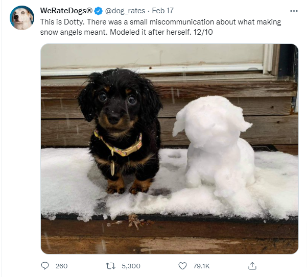

WeRateDogs Twitter Analysis
Contents
WeRateDogs Twitter Analysis¶
Introduction¶
In this project, we will analyze a popular Twitter account @dog_rates, also known as WeRateDogs. WeRateDogs rates people’s dogs with a humorous comment about the dog. These ratings almost always have a denominator of 10 and a numerator that greater than 10, such as as11/10, 12/10, 13/10, etc. People love WeRateDogs’s tweets because of this fun rating system!
Through this analysis, we will find out the relationship between WeRateDog’s rating and people’s reactions; likes and retweets. Does a higher rating bring more like or retweet? Let’s find out!
Also, we will find out the popular dog breed by the number of retweets and likes to find out internet users’ favorite dog breeds.

Analysis¶
We are going to analyze:
Relationship between the ratings and people’s response (Retweet and Like)
Relationship between the ratings and the god stage
Relationship between the ratings and god breeds
Relationship between the ratings and people’s response (Retweet and Like)¶
The dog rating and the number of retweets and the number of likes have a positive relationship. i.e. the higher the rating is, the more retweets and likes the account gets.
Due to its WeRateDogs’s unique rating system, there a few extream ratings that exceed 20/10 such as 1750/10, 420/10 and 75/10.
Interestingly, these extrez mely high ratings do not affect the user’s response. Also, the rating of 13/10 is most likely to get many retweets and likes. The number of retweets and likes are a positive relationship. The more retweets a tweet gets, the more like the tweet gets, and vise visa. This makes sense as a tweet is retweeted or liked, there is a higher chance to be seen by many other users.
Relationship between the ratings and the god stage¶
Dog stage does not so much affect the rating but dogs in ‘puppo’ stage get slightly higher ratings
Relationship between the ratings and god breeds¶
The most frequently posted dog breeds are Golden retriever, Pembroke, and Labrador retriever. The most highly rated dog breeds by WeRateDogs are Samoyed, Chow, Golden retriever. From these results, we can tell that WeRateDogs have a tendency to post Golden retriever because WeRateDogs personally like Golden retriever. As this twitter account is so popular, I expect WeRateDogs receives a lot of submission from users and WeRateDogs prescreens based on their preference. If you want to be featured on WeRateDogs account, sending Golden retriever’s picture might be a good idea.
On the other hand, the most retweeted dog breeds are Labrador retriever, French Bulldog, and Samoyed and the most liked dog breeds are French bulldog, Labrador retriever, and Samoyed. The followers of WeRateDogs like French Bulldogs and Samoyed. If you want your dog picture to be seen by many Twitter users, sending French Bulldog and Samoyed might be a good idea.
Note¶
I extracted image prediction data with more than 70% of confidence rate to enhance the accuracy of the analysis. Also, I selected the 10 most frequently posted dog breeds for this analysis.
Gater¶
#import necessary libraries
import pandas as pd
import numpy as np
import requests
import os
First, we need to collect 3 types of data below:
twitter-archive-enhanced.csv: The WeRateDogs Twitter archive provided by Udacity.image_predictions.tsv: The tweet image predictions, i.e., what breed of dog (or other object, animal, etc.) is present in each tweet according to a neural network. This data is hosted on Udacity’s servers. This can be donwloaded from heretweet_json.txt: Tweet’s JSON data containing retweet count, favorite count, and tweet ID etc.
# read twitter_archive_enhanced.csv
tw_archive = pd.read_csv('twitter-archive-enhanced.csv')
tw_archive.head()
#Donwload image_predictions.tsv from Udacity's servers
url = 'https://d17h27t6h515a5.cloudfront.net/topher/2017/August/599fd2ad_image-predictions/image-predictions.tsv'
response = requests.get(url)
response
<Response [200]>
with open (url.split('/')[-1], mode = 'wb') as file:
file.write(response.content)
image_predict = pd.read_csv('image-predictions.tsv', sep='\t')
image_predict.head(5)
#read twitter data as Json file
import tweepy
from tweepy import OAuthHandler
import json
from timeit import default_timer as timer
# Query Twitter API for each tweet in the Twitter archive and save JSON in a text file
# These are hidden to comply with Twitter's API terms and conditions
consumer_key = 'YOUR API KEY'
consumer_secret = 'YOUR API KEY'
access_token = 'YOUR API KEY'
access_secret = 'YOUR API KEY'
auth = OAuthHandler(consumer_key, consumer_secret)
auth.set_access_token(access_token, access_secret)
api = tweepy.API(auth, wait_on_rate_limit=True)
tweet_ids = tw_archive.tweet_id.values
len(tweet_ids)
# Query Twitter's API for JSON data for each tweet ID in the Twitter archive
count = 0
fails_dict = {}
start = timer()
# Save each tweet's returned JSON as a new line in a .txt file
with open('tweet_json.txt', 'w') as outfile:
# This loop will likely take 20-30 minutes to run because of Twitter's rate limit
for tweet_id in tweet_ids:
count += 1
print(str(count) + ": " + str(tweet_id))
try:
tweet = api.get_status(tweet_id, tweet_mode='extended')
print("Success")
json.dump(tweet._json, outfile)
outfile.write('\n')
except tweepy.TweepError as e:
print("Fail")
fails_dict[tweet_id] = e
pass
end = timer()
print(end - start)
print(fails_dict)
import json
from pandas.io.json import json_normalize
json_df = pd.DataFrame()
arr = []
with open('tweet_json.txt') as json_file:
for row in json_file:
data = json.loads(row)
arr.append(data)
jason_df = pd.DataFrame(json_normalize(arr))
jason_df.head()
Assess¶
#Change the number of columns to be displayed to assess all of the columns
pd.options.display.max_columns = 999
Enhanced Twitter Archive¶
tw_archive.head()
| tweet_id | in_reply_to_status_id | in_reply_to_user_id | timestamp | source | text | retweeted_status_id | retweeted_status_user_id | retweeted_status_timestamp | expanded_urls | rating_numerator | rating_denominator | name | doggo | floofer | pupper | puppo | |
|---|---|---|---|---|---|---|---|---|---|---|---|---|---|---|---|---|---|
| 0 | 892420643555336193 | NaN | NaN | 2017-08-01 16:23:56 +0000 | <a href="http://twitter.com/download/iphone" r... | This is Phineas. He's a mystical boy. Only eve... | NaN | NaN | NaN | https://twitter.com/dog_rates/status/892420643... | 13 | 10 | Phineas | None | None | None | None |
| 1 | 892177421306343426 | NaN | NaN | 2017-08-01 00:17:27 +0000 | <a href="http://twitter.com/download/iphone" r... | This is Tilly. She's just checking pup on you.... | NaN | NaN | NaN | https://twitter.com/dog_rates/status/892177421... | 13 | 10 | Tilly | None | None | None | None |
| 2 | 891815181378084864 | NaN | NaN | 2017-07-31 00:18:03 +0000 | <a href="http://twitter.com/download/iphone" r... | This is Archie. He is a rare Norwegian Pouncin... | NaN | NaN | NaN | https://twitter.com/dog_rates/status/891815181... | 12 | 10 | Archie | None | None | None | None |
| 3 | 891689557279858688 | NaN | NaN | 2017-07-30 15:58:51 +0000 | <a href="http://twitter.com/download/iphone" r... | This is Darla. She commenced a snooze mid meal... | NaN | NaN | NaN | https://twitter.com/dog_rates/status/891689557... | 13 | 10 | Darla | None | None | None | None |
| 4 | 891327558926688256 | NaN | NaN | 2017-07-29 16:00:24 +0000 | <a href="http://twitter.com/download/iphone" r... | This is Franklin. He would like you to stop ca... | NaN | NaN | NaN | https://twitter.com/dog_rates/status/891327558... | 12 | 10 | Franklin | None | None | None | None |
tw_archive.info()
<class 'pandas.core.frame.DataFrame'>
RangeIndex: 2356 entries, 0 to 2355
Data columns (total 17 columns):
tweet_id 2356 non-null int64
in_reply_to_status_id 78 non-null float64
in_reply_to_user_id 78 non-null float64
timestamp 2356 non-null object
source 2356 non-null object
text 2356 non-null object
retweeted_status_id 181 non-null float64
retweeted_status_user_id 181 non-null float64
retweeted_status_timestamp 181 non-null object
expanded_urls 2297 non-null object
rating_numerator 2356 non-null int64
rating_denominator 2356 non-null int64
name 2356 non-null object
doggo 2356 non-null object
floofer 2356 non-null object
pupper 2356 non-null object
puppo 2356 non-null object
dtypes: float64(4), int64(3), object(10)
memory usage: 313.0+ KB
tw_archive.describe()
| tweet_id | in_reply_to_status_id | in_reply_to_user_id | retweeted_status_id | retweeted_status_user_id | rating_numerator | rating_denominator | |
|---|---|---|---|---|---|---|---|
| count | 2.356000e+03 | 7.800000e+01 | 7.800000e+01 | 1.810000e+02 | 1.810000e+02 | 2356.000000 | 2356.000000 |
| mean | 7.427716e+17 | 7.455079e+17 | 2.014171e+16 | 7.720400e+17 | 1.241698e+16 | 13.126486 | 10.455433 |
| std | 6.856705e+16 | 7.582492e+16 | 1.252797e+17 | 6.236928e+16 | 9.599254e+16 | 45.876648 | 6.745237 |
| min | 6.660209e+17 | 6.658147e+17 | 1.185634e+07 | 6.661041e+17 | 7.832140e+05 | 0.000000 | 0.000000 |
| 25% | 6.783989e+17 | 6.757419e+17 | 3.086374e+08 | 7.186315e+17 | 4.196984e+09 | 10.000000 | 10.000000 |
| 50% | 7.196279e+17 | 7.038708e+17 | 4.196984e+09 | 7.804657e+17 | 4.196984e+09 | 11.000000 | 10.000000 |
| 75% | 7.993373e+17 | 8.257804e+17 | 4.196984e+09 | 8.203146e+17 | 4.196984e+09 | 12.000000 | 10.000000 |
| max | 8.924206e+17 | 8.862664e+17 | 8.405479e+17 | 8.874740e+17 | 7.874618e+17 | 1776.000000 | 170.000000 |
tw_archive.query('rating_numerator == 1776').tweet_id.unique()
array([749981277374128128])
The max rating_numerator value 1776 looks invalid but when I checked the original tweet, WeRateDogs actually gave 1776/10 rating to the dog.
tw_archive['tweet_id'].duplicated().sum()
0
Image Predictions¶
image_predict.info()
<class 'pandas.core.frame.DataFrame'>
RangeIndex: 2075 entries, 0 to 2074
Data columns (total 12 columns):
tweet_id 2075 non-null int64
jpg_url 2075 non-null object
img_num 2075 non-null int64
p1 2075 non-null object
p1_conf 2075 non-null float64
p1_dog 2075 non-null bool
p2 2075 non-null object
p2_conf 2075 non-null float64
p2_dog 2075 non-null bool
p3 2075 non-null object
p3_conf 2075 non-null float64
p3_dog 2075 non-null bool
dtypes: bool(3), float64(3), int64(2), object(4)
memory usage: 152.1+ KB
image_predict['tweet_id'].duplicated().sum()
0
image_predict.head(10)
| tweet_id | jpg_url | img_num | p1 | p1_conf | p1_dog | p2 | p2_conf | p2_dog | p3 | p3_conf | p3_dog | |
|---|---|---|---|---|---|---|---|---|---|---|---|---|
| 0 | 666020888022790149 | https://pbs.twimg.com/media/CT4udn0WwAA0aMy.jpg | 1 | Welsh_springer_spaniel | 0.465074 | True | collie | 0.156665 | True | Shetland_sheepdog | 0.061428 | True |
| 1 | 666029285002620928 | https://pbs.twimg.com/media/CT42GRgUYAA5iDo.jpg | 1 | redbone | 0.506826 | True | miniature_pinscher | 0.074192 | True | Rhodesian_ridgeback | 0.072010 | True |
| 2 | 666033412701032449 | https://pbs.twimg.com/media/CT4521TWwAEvMyu.jpg | 1 | German_shepherd | 0.596461 | True | malinois | 0.138584 | True | bloodhound | 0.116197 | True |
| 3 | 666044226329800704 | https://pbs.twimg.com/media/CT5Dr8HUEAA-lEu.jpg | 1 | Rhodesian_ridgeback | 0.408143 | True | redbone | 0.360687 | True | miniature_pinscher | 0.222752 | True |
| 4 | 666049248165822465 | https://pbs.twimg.com/media/CT5IQmsXIAAKY4A.jpg | 1 | miniature_pinscher | 0.560311 | True | Rottweiler | 0.243682 | True | Doberman | 0.154629 | True |
| 5 | 666050758794694657 | https://pbs.twimg.com/media/CT5Jof1WUAEuVxN.jpg | 1 | Bernese_mountain_dog | 0.651137 | True | English_springer | 0.263788 | True | Greater_Swiss_Mountain_dog | 0.016199 | True |
| 6 | 666051853826850816 | https://pbs.twimg.com/media/CT5KoJ1WoAAJash.jpg | 1 | box_turtle | 0.933012 | False | mud_turtle | 0.045885 | False | terrapin | 0.017885 | False |
| 7 | 666055525042405380 | https://pbs.twimg.com/media/CT5N9tpXIAAifs1.jpg | 1 | chow | 0.692517 | True | Tibetan_mastiff | 0.058279 | True | fur_coat | 0.054449 | False |
| 8 | 666057090499244032 | https://pbs.twimg.com/media/CT5PY90WoAAQGLo.jpg | 1 | shopping_cart | 0.962465 | False | shopping_basket | 0.014594 | False | golden_retriever | 0.007959 | True |
| 9 | 666058600524156928 | https://pbs.twimg.com/media/CT5Qw94XAAA_2dP.jpg | 1 | miniature_poodle | 0.201493 | True | komondor | 0.192305 | True | soft-coated_wheaten_terrier | 0.082086 | True |
Additional Data via the Twitter API¶
jason_df.info()
<class 'pandas.core.frame.DataFrame'>
RangeIndex: 2337 entries, 0 to 2336
Columns: 322 entries, contributors to user.verified
dtypes: bool(18), float64(65), int64(9), object(230)
memory usage: 5.5+ MB
jason_df.head()
| contributors | coordinates | created_at | display_text_range | entities.hashtags | entities.media | entities.symbols | entities.urls | entities.user_mentions | extended_entities.media | favorite_count | favorited | full_text | geo | id | id_str | in_reply_to_screen_name | in_reply_to_status_id | in_reply_to_status_id_str | in_reply_to_user_id | in_reply_to_user_id_str | is_quote_status | lang | place | place.bounding_box.coordinates | place.bounding_box.type | place.contained_within | place.country | place.country_code | place.full_name | place.id | place.name | place.place_type | place.url | possibly_sensitive | possibly_sensitive_appealable | quoted_status.contributors | quoted_status.coordinates | quoted_status.created_at | quoted_status.display_text_range | quoted_status.entities.hashtags | quoted_status.entities.media | quoted_status.entities.symbols | quoted_status.entities.urls | quoted_status.entities.user_mentions | quoted_status.extended_entities.media | quoted_status.favorite_count | quoted_status.favorited | quoted_status.full_text | quoted_status.geo | quoted_status.id | quoted_status.id_str | quoted_status.in_reply_to_screen_name | quoted_status.in_reply_to_status_id | quoted_status.in_reply_to_status_id_str | quoted_status.in_reply_to_user_id | quoted_status.in_reply_to_user_id_str | quoted_status.is_quote_status | quoted_status.lang | quoted_status.place | quoted_status.possibly_sensitive | quoted_status.possibly_sensitive_appealable | quoted_status.retweet_count | quoted_status.retweeted | quoted_status.source | quoted_status.truncated | quoted_status.user.contributors_enabled | quoted_status.user.created_at | quoted_status.user.default_profile | quoted_status.user.default_profile_image | quoted_status.user.description | quoted_status.user.entities.description.urls | quoted_status.user.entities.url.urls | quoted_status.user.favourites_count | quoted_status.user.follow_request_sent | quoted_status.user.followers_count | quoted_status.user.following | quoted_status.user.friends_count | quoted_status.user.geo_enabled | quoted_status.user.has_extended_profile | quoted_status.user.id | quoted_status.user.id_str | quoted_status.user.is_translation_enabled | quoted_status.user.is_translator | quoted_status.user.lang | quoted_status.user.listed_count | quoted_status.user.location | quoted_status.user.name | quoted_status.user.notifications | quoted_status.user.profile_background_color | quoted_status.user.profile_background_image_url | quoted_status.user.profile_background_image_url_https | quoted_status.user.profile_background_tile | quoted_status.user.profile_banner_url | quoted_status.user.profile_image_url | quoted_status.user.profile_image_url_https | quoted_status.user.profile_link_color | quoted_status.user.profile_sidebar_border_color | quoted_status.user.profile_sidebar_fill_color | quoted_status.user.profile_text_color | quoted_status.user.profile_use_background_image | quoted_status.user.protected | quoted_status.user.screen_name | quoted_status.user.statuses_count | quoted_status.user.time_zone | quoted_status.user.translator_type | quoted_status.user.url | quoted_status.user.utc_offset | quoted_status.user.verified | quoted_status_id | quoted_status_id_str | quoted_status_permalink.display | quoted_status_permalink.expanded | quoted_status_permalink.url | retweet_count | retweeted | retweeted_status.contributors | retweeted_status.coordinates | retweeted_status.created_at | retweeted_status.display_text_range | retweeted_status.entities.hashtags | retweeted_status.entities.media | retweeted_status.entities.symbols | retweeted_status.entities.urls | retweeted_status.entities.user_mentions | retweeted_status.extended_entities.media | retweeted_status.favorite_count | retweeted_status.favorited | retweeted_status.full_text | retweeted_status.geo | retweeted_status.id | retweeted_status.id_str | retweeted_status.in_reply_to_screen_name | retweeted_status.in_reply_to_status_id | retweeted_status.in_reply_to_status_id_str | retweeted_status.in_reply_to_user_id | retweeted_status.in_reply_to_user_id_str | retweeted_status.is_quote_status | retweeted_status.lang | retweeted_status.place | retweeted_status.place.bounding_box.coordinates | retweeted_status.place.bounding_box.type | retweeted_status.place.contained_within | retweeted_status.place.country | retweeted_status.place.country_code | retweeted_status.place.full_name | retweeted_status.place.id | retweeted_status.place.name | retweeted_status.place.place_type | retweeted_status.place.url | retweeted_status.possibly_sensitive | retweeted_status.possibly_sensitive_appealable | retweeted_status.quoted_status.contributors | retweeted_status.quoted_status.coordinates | retweeted_status.quoted_status.created_at | retweeted_status.quoted_status.display_text_range | retweeted_status.quoted_status.entities.hashtags | retweeted_status.quoted_status.entities.media | retweeted_status.quoted_status.entities.symbols | retweeted_status.quoted_status.entities.urls | retweeted_status.quoted_status.entities.user_mentions | retweeted_status.quoted_status.extended_entities.media | retweeted_status.quoted_status.favorite_count | retweeted_status.quoted_status.favorited | retweeted_status.quoted_status.full_text | retweeted_status.quoted_status.geo | retweeted_status.quoted_status.id | retweeted_status.quoted_status.id_str | retweeted_status.quoted_status.in_reply_to_screen_name | retweeted_status.quoted_status.in_reply_to_status_id | retweeted_status.quoted_status.in_reply_to_status_id_str | retweeted_status.quoted_status.in_reply_to_user_id | retweeted_status.quoted_status.in_reply_to_user_id_str | retweeted_status.quoted_status.is_quote_status | retweeted_status.quoted_status.lang | retweeted_status.quoted_status.place | retweeted_status.quoted_status.possibly_sensitive | retweeted_status.quoted_status.possibly_sensitive_appealable | retweeted_status.quoted_status.retweet_count | retweeted_status.quoted_status.retweeted | retweeted_status.quoted_status.source | retweeted_status.quoted_status.truncated | retweeted_status.quoted_status.user.contributors_enabled | retweeted_status.quoted_status.user.created_at | retweeted_status.quoted_status.user.default_profile | retweeted_status.quoted_status.user.default_profile_image | retweeted_status.quoted_status.user.description | retweeted_status.quoted_status.user.entities.description.urls | retweeted_status.quoted_status.user.entities.url.urls | retweeted_status.quoted_status.user.favourites_count | retweeted_status.quoted_status.user.follow_request_sent | retweeted_status.quoted_status.user.followers_count | retweeted_status.quoted_status.user.following | retweeted_status.quoted_status.user.friends_count | retweeted_status.quoted_status.user.geo_enabled | retweeted_status.quoted_status.user.has_extended_profile | retweeted_status.quoted_status.user.id | retweeted_status.quoted_status.user.id_str | retweeted_status.quoted_status.user.is_translation_enabled | retweeted_status.quoted_status.user.is_translator | retweeted_status.quoted_status.user.lang | retweeted_status.quoted_status.user.listed_count | retweeted_status.quoted_status.user.location | retweeted_status.quoted_status.user.name | retweeted_status.quoted_status.user.notifications | retweeted_status.quoted_status.user.profile_background_color | retweeted_status.quoted_status.user.profile_background_image_url | retweeted_status.quoted_status.user.profile_background_image_url_https | retweeted_status.quoted_status.user.profile_background_tile | retweeted_status.quoted_status.user.profile_banner_url | retweeted_status.quoted_status.user.profile_image_url | retweeted_status.quoted_status.user.profile_image_url_https | retweeted_status.quoted_status.user.profile_link_color | retweeted_status.quoted_status.user.profile_sidebar_border_color | retweeted_status.quoted_status.user.profile_sidebar_fill_color | retweeted_status.quoted_status.user.profile_text_color | retweeted_status.quoted_status.user.profile_use_background_image | retweeted_status.quoted_status.user.protected | retweeted_status.quoted_status.user.screen_name | retweeted_status.quoted_status.user.statuses_count | retweeted_status.quoted_status.user.time_zone | retweeted_status.quoted_status.user.translator_type | retweeted_status.quoted_status.user.url | retweeted_status.quoted_status.user.utc_offset | retweeted_status.quoted_status.user.verified | retweeted_status.quoted_status_id | retweeted_status.quoted_status_id_str | retweeted_status.quoted_status_permalink.display | retweeted_status.quoted_status_permalink.expanded | retweeted_status.quoted_status_permalink.url | retweeted_status.retweet_count | retweeted_status.retweeted | retweeted_status.source | retweeted_status.truncated | retweeted_status.user.contributors_enabled | retweeted_status.user.created_at | retweeted_status.user.default_profile | retweeted_status.user.default_profile_image | retweeted_status.user.description | retweeted_status.user.entities.description.urls | retweeted_status.user.entities.url.urls | retweeted_status.user.favourites_count | retweeted_status.user.follow_request_sent | retweeted_status.user.followers_count | retweeted_status.user.following | retweeted_status.user.friends_count | retweeted_status.user.geo_enabled | retweeted_status.user.has_extended_profile | retweeted_status.user.id | retweeted_status.user.id_str | retweeted_status.user.is_translation_enabled | retweeted_status.user.is_translator | retweeted_status.user.lang | retweeted_status.user.listed_count | retweeted_status.user.location | retweeted_status.user.name | retweeted_status.user.notifications | retweeted_status.user.profile_background_color | retweeted_status.user.profile_background_image_url | retweeted_status.user.profile_background_image_url_https | retweeted_status.user.profile_background_tile | retweeted_status.user.profile_banner_url | retweeted_status.user.profile_image_url | retweeted_status.user.profile_image_url_https | retweeted_status.user.profile_link_color | retweeted_status.user.profile_sidebar_border_color | retweeted_status.user.profile_sidebar_fill_color | retweeted_status.user.profile_text_color | retweeted_status.user.profile_use_background_image | retweeted_status.user.protected | retweeted_status.user.screen_name | retweeted_status.user.statuses_count | retweeted_status.user.time_zone | retweeted_status.user.translator_type | retweeted_status.user.url | retweeted_status.user.utc_offset | retweeted_status.user.verified | source | truncated | user.contributors_enabled | user.created_at | user.default_profile | user.default_profile_image | user.description | user.entities.description.urls | user.entities.url.urls | user.favourites_count | user.follow_request_sent | user.followers_count | user.following | user.friends_count | user.geo_enabled | user.has_extended_profile | user.id | user.id_str | user.is_translation_enabled | user.is_translator | user.lang | user.listed_count | user.location | user.name | user.notifications | user.profile_background_color | user.profile_background_image_url | user.profile_background_image_url_https | user.profile_background_tile | user.profile_banner_url | user.profile_image_url | user.profile_image_url_https | user.profile_link_color | user.profile_sidebar_border_color | user.profile_sidebar_fill_color | user.profile_text_color | user.profile_use_background_image | user.protected | user.screen_name | user.statuses_count | user.time_zone | user.translator_type | user.url | user.utc_offset | user.verified | |
|---|---|---|---|---|---|---|---|---|---|---|---|---|---|---|---|---|---|---|---|---|---|---|---|---|---|---|---|---|---|---|---|---|---|---|---|---|---|---|---|---|---|---|---|---|---|---|---|---|---|---|---|---|---|---|---|---|---|---|---|---|---|---|---|---|---|---|---|---|---|---|---|---|---|---|---|---|---|---|---|---|---|---|---|---|---|---|---|---|---|---|---|---|---|---|---|---|---|---|---|---|---|---|---|---|---|---|---|---|---|---|---|---|---|---|---|---|---|---|---|---|---|---|---|---|---|---|---|---|---|---|---|---|---|---|---|---|---|---|---|---|---|---|---|---|---|---|---|---|---|---|---|---|---|---|---|---|---|---|---|---|---|---|---|---|---|---|---|---|---|---|---|---|---|---|---|---|---|---|---|---|---|---|---|---|---|---|---|---|---|---|---|---|---|---|---|---|---|---|---|---|---|---|---|---|---|---|---|---|---|---|---|---|---|---|---|---|---|---|---|---|---|---|---|---|---|---|---|---|---|---|---|---|---|---|---|---|---|---|---|---|---|---|---|---|---|---|---|---|---|---|---|---|---|---|---|---|---|---|---|---|---|---|---|---|---|---|---|---|---|---|---|---|---|---|---|---|---|---|---|---|---|---|---|---|---|---|---|---|---|---|---|---|---|---|---|---|---|---|---|---|---|---|---|---|---|---|---|---|---|---|---|---|---|---|---|---|---|---|---|---|---|---|
| 0 | None | None | Tue Aug 01 16:23:56 +0000 2017 | [0, 85] | [] | [{'id': 892420639486877696, 'id_str': '8924206... | [] | [] | [] | [{'id': 892420639486877696, 'id_str': '8924206... | 37471 | False | This is Phineas. He's a mystical boy. Only eve... | None | 892420643555336193 | 892420643555336193 | None | NaN | None | NaN | None | False | en | NaN | NaN | NaN | NaN | NaN | NaN | NaN | NaN | NaN | NaN | NaN | False | False | NaN | NaN | NaN | NaN | NaN | NaN | NaN | NaN | NaN | NaN | NaN | NaN | NaN | NaN | NaN | NaN | NaN | NaN | NaN | NaN | NaN | NaN | NaN | NaN | NaN | NaN | NaN | NaN | NaN | NaN | NaN | NaN | NaN | NaN | NaN | NaN | NaN | NaN | NaN | NaN | NaN | NaN | NaN | NaN | NaN | NaN | NaN | NaN | NaN | NaN | NaN | NaN | NaN | NaN | NaN | NaN | NaN | NaN | NaN | NaN | NaN | NaN | NaN | NaN | NaN | NaN | NaN | NaN | NaN | NaN | NaN | NaN | NaN | NaN | NaN | NaN | NaN | NaN | 8162 | False | NaN | NaN | NaN | NaN | NaN | NaN | NaN | NaN | NaN | NaN | NaN | NaN | NaN | NaN | NaN | NaN | NaN | NaN | NaN | NaN | NaN | NaN | NaN | NaN | NaN | NaN | NaN | NaN | NaN | NaN | NaN | NaN | NaN | NaN | NaN | NaN | NaN | NaN | NaN | NaN | NaN | NaN | NaN | NaN | NaN | NaN | NaN | NaN | NaN | NaN | NaN | NaN | NaN | NaN | NaN | NaN | NaN | NaN | NaN | NaN | NaN | NaN | NaN | NaN | NaN | NaN | NaN | NaN | NaN | NaN | NaN | NaN | NaN | NaN | NaN | NaN | NaN | NaN | NaN | NaN | NaN | NaN | NaN | NaN | NaN | NaN | NaN | NaN | NaN | NaN | NaN | NaN | NaN | NaN | NaN | NaN | NaN | NaN | NaN | NaN | NaN | NaN | NaN | NaN | NaN | NaN | NaN | NaN | NaN | NaN | NaN | NaN | NaN | NaN | NaN | NaN | NaN | NaN | NaN | NaN | NaN | NaN | NaN | NaN | NaN | NaN | NaN | NaN | NaN | NaN | NaN | NaN | NaN | NaN | NaN | NaN | NaN | NaN | NaN | NaN | NaN | NaN | NaN | NaN | NaN | NaN | NaN | NaN | NaN | NaN | NaN | NaN | NaN | NaN | NaN | NaN | NaN | NaN | NaN | NaN | NaN | <a href="http://twitter.com/download/iphone" r... | False | False | Sun Nov 15 21:41:29 +0000 2015 | False | False | Your Only Source For Professional Dog Ratings ... | [] | [{'url': 'https://t.co/N7sNNHAEXS', 'expanded_... | 142717 | False | 8119873 | False | 12 | True | False | 4196983835 | 4196983835 | False | False | None | 6239 | 「 DM YOUR DOGS 」 | WeRateDogs™ 🏳️🌈 | False | 000000 | http://abs.twimg.com/images/themes/theme1/bg.png | https://abs.twimg.com/images/themes/theme1/bg.png | False | https://pbs.twimg.com/profile_banners/41969838... | http://pbs.twimg.com/profile_images/1112594177... | https://pbs.twimg.com/profile_images/111259417... | F5ABB5 | 000000 | 000000 | 000000 | False | False | dog_rates | 10357 | None | none | https://t.co/N7sNNHAEXS | None | True |
| 1 | None | None | Tue Aug 01 00:17:27 +0000 2017 | [0, 138] | [] | [{'id': 892177413194625024, 'id_str': '8921774... | [] | [] | [] | [{'id': 892177413194625024, 'id_str': '8921774... | 32209 | False | This is Tilly. She's just checking pup on you.... | None | 892177421306343426 | 892177421306343426 | None | NaN | None | NaN | None | False | en | NaN | NaN | NaN | NaN | NaN | NaN | NaN | NaN | NaN | NaN | NaN | False | False | NaN | NaN | NaN | NaN | NaN | NaN | NaN | NaN | NaN | NaN | NaN | NaN | NaN | NaN | NaN | NaN | NaN | NaN | NaN | NaN | NaN | NaN | NaN | NaN | NaN | NaN | NaN | NaN | NaN | NaN | NaN | NaN | NaN | NaN | NaN | NaN | NaN | NaN | NaN | NaN | NaN | NaN | NaN | NaN | NaN | NaN | NaN | NaN | NaN | NaN | NaN | NaN | NaN | NaN | NaN | NaN | NaN | NaN | NaN | NaN | NaN | NaN | NaN | NaN | NaN | NaN | NaN | NaN | NaN | NaN | NaN | NaN | NaN | NaN | NaN | NaN | NaN | NaN | 6040 | False | NaN | NaN | NaN | NaN | NaN | NaN | NaN | NaN | NaN | NaN | NaN | NaN | NaN | NaN | NaN | NaN | NaN | NaN | NaN | NaN | NaN | NaN | NaN | NaN | NaN | NaN | NaN | NaN | NaN | NaN | NaN | NaN | NaN | NaN | NaN | NaN | NaN | NaN | NaN | NaN | NaN | NaN | NaN | NaN | NaN | NaN | NaN | NaN | NaN | NaN | NaN | NaN | NaN | NaN | NaN | NaN | NaN | NaN | NaN | NaN | NaN | NaN | NaN | NaN | NaN | NaN | NaN | NaN | NaN | NaN | NaN | NaN | NaN | NaN | NaN | NaN | NaN | NaN | NaN | NaN | NaN | NaN | NaN | NaN | NaN | NaN | NaN | NaN | NaN | NaN | NaN | NaN | NaN | NaN | NaN | NaN | NaN | NaN | NaN | NaN | NaN | NaN | NaN | NaN | NaN | NaN | NaN | NaN | NaN | NaN | NaN | NaN | NaN | NaN | NaN | NaN | NaN | NaN | NaN | NaN | NaN | NaN | NaN | NaN | NaN | NaN | NaN | NaN | NaN | NaN | NaN | NaN | NaN | NaN | NaN | NaN | NaN | NaN | NaN | NaN | NaN | NaN | NaN | NaN | NaN | NaN | NaN | NaN | NaN | NaN | NaN | NaN | NaN | NaN | NaN | NaN | NaN | NaN | NaN | NaN | NaN | <a href="http://twitter.com/download/iphone" r... | False | False | Sun Nov 15 21:41:29 +0000 2015 | False | False | Your Only Source For Professional Dog Ratings ... | [] | [{'url': 'https://t.co/N7sNNHAEXS', 'expanded_... | 142717 | False | 8119873 | False | 12 | True | False | 4196983835 | 4196983835 | False | False | None | 6239 | 「 DM YOUR DOGS 」 | WeRateDogs™ 🏳️🌈 | False | 000000 | http://abs.twimg.com/images/themes/theme1/bg.png | https://abs.twimg.com/images/themes/theme1/bg.png | False | https://pbs.twimg.com/profile_banners/41969838... | http://pbs.twimg.com/profile_images/1112594177... | https://pbs.twimg.com/profile_images/111259417... | F5ABB5 | 000000 | 000000 | 000000 | False | False | dog_rates | 10357 | None | none | https://t.co/N7sNNHAEXS | None | True |
| 2 | None | None | Mon Jul 31 00:18:03 +0000 2017 | [0, 121] | [] | [{'id': 891815175371796480, 'id_str': '8918151... | [] | [] | [] | [{'id': 891815175371796480, 'id_str': '8918151... | 24280 | False | This is Archie. He is a rare Norwegian Pouncin... | None | 891815181378084864 | 891815181378084864 | None | NaN | None | NaN | None | False | en | NaN | NaN | NaN | NaN | NaN | NaN | NaN | NaN | NaN | NaN | NaN | False | False | NaN | NaN | NaN | NaN | NaN | NaN | NaN | NaN | NaN | NaN | NaN | NaN | NaN | NaN | NaN | NaN | NaN | NaN | NaN | NaN | NaN | NaN | NaN | NaN | NaN | NaN | NaN | NaN | NaN | NaN | NaN | NaN | NaN | NaN | NaN | NaN | NaN | NaN | NaN | NaN | NaN | NaN | NaN | NaN | NaN | NaN | NaN | NaN | NaN | NaN | NaN | NaN | NaN | NaN | NaN | NaN | NaN | NaN | NaN | NaN | NaN | NaN | NaN | NaN | NaN | NaN | NaN | NaN | NaN | NaN | NaN | NaN | NaN | NaN | NaN | NaN | NaN | NaN | 3999 | False | NaN | NaN | NaN | NaN | NaN | NaN | NaN | NaN | NaN | NaN | NaN | NaN | NaN | NaN | NaN | NaN | NaN | NaN | NaN | NaN | NaN | NaN | NaN | NaN | NaN | NaN | NaN | NaN | NaN | NaN | NaN | NaN | NaN | NaN | NaN | NaN | NaN | NaN | NaN | NaN | NaN | NaN | NaN | NaN | NaN | NaN | NaN | NaN | NaN | NaN | NaN | NaN | NaN | NaN | NaN | NaN | NaN | NaN | NaN | NaN | NaN | NaN | NaN | NaN | NaN | NaN | NaN | NaN | NaN | NaN | NaN | NaN | NaN | NaN | NaN | NaN | NaN | NaN | NaN | NaN | NaN | NaN | NaN | NaN | NaN | NaN | NaN | NaN | NaN | NaN | NaN | NaN | NaN | NaN | NaN | NaN | NaN | NaN | NaN | NaN | NaN | NaN | NaN | NaN | NaN | NaN | NaN | NaN | NaN | NaN | NaN | NaN | NaN | NaN | NaN | NaN | NaN | NaN | NaN | NaN | NaN | NaN | NaN | NaN | NaN | NaN | NaN | NaN | NaN | NaN | NaN | NaN | NaN | NaN | NaN | NaN | NaN | NaN | NaN | NaN | NaN | NaN | NaN | NaN | NaN | NaN | NaN | NaN | NaN | NaN | NaN | NaN | NaN | NaN | NaN | NaN | NaN | NaN | NaN | NaN | NaN | <a href="http://twitter.com/download/iphone" r... | False | False | Sun Nov 15 21:41:29 +0000 2015 | False | False | Your Only Source For Professional Dog Ratings ... | [] | [{'url': 'https://t.co/N7sNNHAEXS', 'expanded_... | 142717 | False | 8119873 | False | 12 | True | False | 4196983835 | 4196983835 | False | False | None | 6239 | 「 DM YOUR DOGS 」 | WeRateDogs™ 🏳️🌈 | False | 000000 | http://abs.twimg.com/images/themes/theme1/bg.png | https://abs.twimg.com/images/themes/theme1/bg.png | False | https://pbs.twimg.com/profile_banners/41969838... | http://pbs.twimg.com/profile_images/1112594177... | https://pbs.twimg.com/profile_images/111259417... | F5ABB5 | 000000 | 000000 | 000000 | False | False | dog_rates | 10357 | None | none | https://t.co/N7sNNHAEXS | None | True |
| 3 | None | None | Sun Jul 30 15:58:51 +0000 2017 | [0, 79] | [] | [{'id': 891689552724799489, 'id_str': '8916895... | [] | [] | [] | [{'id': 891689552724799489, 'id_str': '8916895... | 40802 | False | This is Darla. She commenced a snooze mid meal... | None | 891689557279858688 | 891689557279858688 | None | NaN | None | NaN | None | False | en | NaN | NaN | NaN | NaN | NaN | NaN | NaN | NaN | NaN | NaN | NaN | False | False | NaN | NaN | NaN | NaN | NaN | NaN | NaN | NaN | NaN | NaN | NaN | NaN | NaN | NaN | NaN | NaN | NaN | NaN | NaN | NaN | NaN | NaN | NaN | NaN | NaN | NaN | NaN | NaN | NaN | NaN | NaN | NaN | NaN | NaN | NaN | NaN | NaN | NaN | NaN | NaN | NaN | NaN | NaN | NaN | NaN | NaN | NaN | NaN | NaN | NaN | NaN | NaN | NaN | NaN | NaN | NaN | NaN | NaN | NaN | NaN | NaN | NaN | NaN | NaN | NaN | NaN | NaN | NaN | NaN | NaN | NaN | NaN | NaN | NaN | NaN | NaN | NaN | NaN | 8314 | False | NaN | NaN | NaN | NaN | NaN | NaN | NaN | NaN | NaN | NaN | NaN | NaN | NaN | NaN | NaN | NaN | NaN | NaN | NaN | NaN | NaN | NaN | NaN | NaN | NaN | NaN | NaN | NaN | NaN | NaN | NaN | NaN | NaN | NaN | NaN | NaN | NaN | NaN | NaN | NaN | NaN | NaN | NaN | NaN | NaN | NaN | NaN | NaN | NaN | NaN | NaN | NaN | NaN | NaN | NaN | NaN | NaN | NaN | NaN | NaN | NaN | NaN | NaN | NaN | NaN | NaN | NaN | NaN | NaN | NaN | NaN | NaN | NaN | NaN | NaN | NaN | NaN | NaN | NaN | NaN | NaN | NaN | NaN | NaN | NaN | NaN | NaN | NaN | NaN | NaN | NaN | NaN | NaN | NaN | NaN | NaN | NaN | NaN | NaN | NaN | NaN | NaN | NaN | NaN | NaN | NaN | NaN | NaN | NaN | NaN | NaN | NaN | NaN | NaN | NaN | NaN | NaN | NaN | NaN | NaN | NaN | NaN | NaN | NaN | NaN | NaN | NaN | NaN | NaN | NaN | NaN | NaN | NaN | NaN | NaN | NaN | NaN | NaN | NaN | NaN | NaN | NaN | NaN | NaN | NaN | NaN | NaN | NaN | NaN | NaN | NaN | NaN | NaN | NaN | NaN | NaN | NaN | NaN | NaN | NaN | NaN | <a href="http://twitter.com/download/iphone" r... | False | False | Sun Nov 15 21:41:29 +0000 2015 | False | False | Your Only Source For Professional Dog Ratings ... | [] | [{'url': 'https://t.co/N7sNNHAEXS', 'expanded_... | 142717 | False | 8119873 | False | 12 | True | False | 4196983835 | 4196983835 | False | False | None | 6239 | 「 DM YOUR DOGS 」 | WeRateDogs™ 🏳️🌈 | False | 000000 | http://abs.twimg.com/images/themes/theme1/bg.png | https://abs.twimg.com/images/themes/theme1/bg.png | False | https://pbs.twimg.com/profile_banners/41969838... | http://pbs.twimg.com/profile_images/1112594177... | https://pbs.twimg.com/profile_images/111259417... | F5ABB5 | 000000 | 000000 | 000000 | False | False | dog_rates | 10357 | None | none | https://t.co/N7sNNHAEXS | None | True |
| 4 | None | None | Sat Jul 29 16:00:24 +0000 2017 | [0, 138] | [{'text': 'BarkWeek', 'indices': [129, 138]}] | [{'id': 891327551943041024, 'id_str': '8913275... | [] | [] | [] | [{'id': 891327551943041024, 'id_str': '8913275... | 39012 | False | This is Franklin. He would like you to stop ca... | None | 891327558926688256 | 891327558926688256 | None | NaN | None | NaN | None | False | en | NaN | NaN | NaN | NaN | NaN | NaN | NaN | NaN | NaN | NaN | NaN | False | False | NaN | NaN | NaN | NaN | NaN | NaN | NaN | NaN | NaN | NaN | NaN | NaN | NaN | NaN | NaN | NaN | NaN | NaN | NaN | NaN | NaN | NaN | NaN | NaN | NaN | NaN | NaN | NaN | NaN | NaN | NaN | NaN | NaN | NaN | NaN | NaN | NaN | NaN | NaN | NaN | NaN | NaN | NaN | NaN | NaN | NaN | NaN | NaN | NaN | NaN | NaN | NaN | NaN | NaN | NaN | NaN | NaN | NaN | NaN | NaN | NaN | NaN | NaN | NaN | NaN | NaN | NaN | NaN | NaN | NaN | NaN | NaN | NaN | NaN | NaN | NaN | NaN | NaN | 9010 | False | NaN | NaN | NaN | NaN | NaN | NaN | NaN | NaN | NaN | NaN | NaN | NaN | NaN | NaN | NaN | NaN | NaN | NaN | NaN | NaN | NaN | NaN | NaN | NaN | NaN | NaN | NaN | NaN | NaN | NaN | NaN | NaN | NaN | NaN | NaN | NaN | NaN | NaN | NaN | NaN | NaN | NaN | NaN | NaN | NaN | NaN | NaN | NaN | NaN | NaN | NaN | NaN | NaN | NaN | NaN | NaN | NaN | NaN | NaN | NaN | NaN | NaN | NaN | NaN | NaN | NaN | NaN | NaN | NaN | NaN | NaN | NaN | NaN | NaN | NaN | NaN | NaN | NaN | NaN | NaN | NaN | NaN | NaN | NaN | NaN | NaN | NaN | NaN | NaN | NaN | NaN | NaN | NaN | NaN | NaN | NaN | NaN | NaN | NaN | NaN | NaN | NaN | NaN | NaN | NaN | NaN | NaN | NaN | NaN | NaN | NaN | NaN | NaN | NaN | NaN | NaN | NaN | NaN | NaN | NaN | NaN | NaN | NaN | NaN | NaN | NaN | NaN | NaN | NaN | NaN | NaN | NaN | NaN | NaN | NaN | NaN | NaN | NaN | NaN | NaN | NaN | NaN | NaN | NaN | NaN | NaN | NaN | NaN | NaN | NaN | NaN | NaN | NaN | NaN | NaN | NaN | NaN | NaN | NaN | NaN | NaN | <a href="http://twitter.com/download/iphone" r... | False | False | Sun Nov 15 21:41:29 +0000 2015 | False | False | Your Only Source For Professional Dog Ratings ... | [] | [{'url': 'https://t.co/N7sNNHAEXS', 'expanded_... | 142717 | False | 8119873 | False | 12 | True | False | 4196983835 | 4196983835 | False | False | None | 6239 | 「 DM YOUR DOGS 」 | WeRateDogs™ 🏳️🌈 | False | 000000 | http://abs.twimg.com/images/themes/theme1/bg.png | https://abs.twimg.com/images/themes/theme1/bg.png | False | https://pbs.twimg.com/profile_banners/41969838... | http://pbs.twimg.com/profile_images/1112594177... | https://pbs.twimg.com/profile_images/111259417... | F5ABB5 | 000000 | 000000 | 000000 | False | False | dog_rates | 10357 | None | none | https://t.co/N7sNNHAEXS | None | True |
Take out necessary tweet objects from ‘jason_df’. I referred to the twitter’s documentation. Here is the list of tweet objects we need for this analysis.
id: The integer representation of the unique identifier for this Tweet.retweet_count: Number of times this Tweet has been retweeted.favorite_count: Indicates approximately how many times this Tweet has been liked by Twitter users.in_reply_to_status_id: If the represented Tweet is a reply, this field will contain the integer representation of the original Tweet’s ID.quoted_status_id: This field only surfaces when the Tweet is a quote Tweet. This field contains the integer value Tweet ID of the quoted Tweet.is_quote_status: Indicates whether this is a Quoted Tweet.retweeted_status.id: Retweets can be distinguished from typical Tweets by the existence of a retweeted_status attribute.
tweet_performance = jason_df[['id', 'retweet_count','favorite_count','in_reply_to_status_id','quoted_status_id','is_quote_status', 'retweeted_status.id']]
tweet_performance.head()
| id | retweet_count | favorite_count | in_reply_to_status_id | quoted_status_id | is_quote_status | retweeted_status.id | |
|---|---|---|---|---|---|---|---|
| 0 | 892420643555336193 | 8162 | 37471 | NaN | NaN | False | NaN |
| 1 | 892177421306343426 | 6040 | 32209 | NaN | NaN | False | NaN |
| 2 | 891815181378084864 | 3999 | 24280 | NaN | NaN | False | NaN |
| 3 | 891689557279858688 | 8314 | 40802 | NaN | NaN | False | NaN |
| 4 | 891327558926688256 | 9010 | 39012 | NaN | NaN | False | NaN |
tweet_performance.info()
<class 'pandas.core.frame.DataFrame'>
RangeIndex: 2337 entries, 0 to 2336
Data columns (total 7 columns):
id 2337 non-null int64
retweet_count 2337 non-null int64
favorite_count 2337 non-null int64
in_reply_to_status_id 77 non-null float64
quoted_status_id 26 non-null float64
is_quote_status 2337 non-null bool
retweeted_status.id 166 non-null float64
dtypes: bool(1), float64(3), int64(3)
memory usage: 111.9 KB
tweet_performance.describe()
| id | retweet_count | favorite_count | in_reply_to_status_id | quoted_status_id | retweeted_status.id | |
|---|---|---|---|---|---|---|
| count | 2.337000e+03 | 2337.000000 | 2337.000000 | 7.700000e+01 | 2.600000e+01 | 1.660000e+02 |
| mean | 7.420692e+17 | 2869.356440 | 7826.744972 | 7.440692e+17 | 8.113972e+17 | 7.692737e+17 |
| std | 6.824243e+16 | 4846.821148 | 12133.245369 | 7.524295e+16 | 6.295843e+16 | 6.134003e+16 |
| min | 6.660209e+17 | 1.000000 | 0.000000 | 6.658147e+17 | 6.721083e+17 | 6.661041e+17 |
| 25% | 6.783345e+17 | 577.000000 | 1354.000000 | 6.757073e+17 | 7.761338e+17 | 7.122010e+17 |
| 50% | 7.185406e+17 | 1341.000000 | 3405.000000 | 7.032559e+17 | 8.281173e+17 | 7.787593e+17 |
| 75% | 7.986825e+17 | 3346.000000 | 9587.000000 | 8.233264e+17 | 8.637581e+17 | 8.190060e+17 |
| max | 8.924206e+17 | 82235.000000 | 161826.000000 | 8.862664e+17 | 8.860534e+17 | 8.860537e+17 |
tweet_performance.query('favorite_count == 0').id.unique
<bound method Series.unique of 31 886054160059072513
35 885311592912609280
67 879130579576475649
72 878404777348136964
73 878316110768087041
77 877611172832227328
90 874434818259525634
95 873337748698140672
105 871166179821445120
119 868639477480148993
125 867072653475098625
131 866094527597207552
140 863471782782697472
152 860981674716409858
153 860924035999428608
158 860177593139703809
164 858860390427611136
173 857062103051644929
177 856330835276025856
186 855245323840757760
187 855138241867124737
196 852936405516943360
203 851953902622658560
204 851861385021730816
214 849668094696017920
222 847978865427394560
223 847971574464610304
241 845098359547420673
255 841833993020538882
261 840761248237133825
...
758 776249906839351296
763 775898661951791106
778 773336787167145985
784 772615324260794368
795 771171053431250945
799 771004394259247104
805 770093767776997377
809 769335591808995329
812 768909767477751808
816 768554158521745409
824 766864461642756096
830 766078092750233600
843 763167063695355904
851 761750502866649088
855 761371037149827077
868 760153949710192640
873 759566828574212096
878 759159934323924993
891 757729163776290825
894 757597904299253760
909 754874841593970688
919 753298634498793472
925 752701944171524096
931 752309394570878976
994 747242308580548608
1005 746521445350707200
1025 743835915802583040
1224 711998809858043904
2240 667550904950915073
2241 667550882905632768
Name: id, Length: 166, dtype: int64>
Quality issues¶
Enhanced Twitter Archive table¶
There are some invalid rating: the numerator and denominator values are wrong
Timestamp is a wrong datatype: Object
Image Predictions table¶
Some images are not a dog - We only want to analyze dog data
Not all predictions are accurate: The predictions in p1 show the predictions with the highest accuracy level among 3 image predictions
Dog names in image predictions contain underscores between words
Additional Data via the Twitter API table¶
Replies, quoted retweets, and retweets are included in the tweet data. We want to analyze the dog rating tweet only.
Some tweets got only 1 retweet and 0 favorite, which is not likely to happen to such a famous twitter account. - Maybe cause they are retweet or favorite for non-dog rating tweets.
The description of individual tweet IDs are different from other data: ‘id’ need to align with
tweet_idwhich are used in other 2 data.
Tidiness issues¶
Take out only the necessary columns
dog “stage” should be in one column
Retweets and favorite count data should be included in the enhanced Twitter Archive table
Image prediction data should be included in the enhanced Twitter Archive table
Clean¶
#create copies of each data
tw_archive_clean = tw_archive.copy()
image_predict_clean = image_predict.copy()
tweet_performance_clean = tweet_performance.copy()
Issue¶
There are some invalid rating: the numerator and denominator values are wrong.
define¶
Drop 0 values from
rating_numerator.Drop value other than 10 from
rating_denominator
Code¶
tw_archive_clean = tw_archive_clean[tw_archive_clean.rating_numerator != 0]
tw_archive_clean = tw_archive_clean[tw_archive_clean.rating_denominator == 10]
Test¶
tw_archive_clean.describe()
| tweet_id | in_reply_to_status_id | in_reply_to_user_id | retweeted_status_id | retweeted_status_user_id | rating_numerator | rating_denominator | |
|---|---|---|---|---|---|---|---|
| count | 2.331000e+03 | 7.200000e+01 | 7.200000e+01 | 1.800000e+02 | 1.800000e+02 | 2331.000000 | 2331.0 |
| mean | 7.428867e+17 | 7.455882e+17 | 2.182018e+16 | 7.722159e+17 | 1.248597e+16 | 12.247962 | 10.0 |
| std | 6.869472e+16 | 7.653842e+16 | 1.303234e+17 | 6.249820e+16 | 9.625580e+16 | 41.038507 | 0.0 |
| min | 6.660209e+17 | 6.658147e+17 | 1.185634e+07 | 6.661041e+17 | 7.832140e+05 | 1.000000 | 10.0 |
| 25% | 6.783607e+17 | 6.754602e+17 | 3.421943e+08 | 7.171759e+17 | 4.196984e+09 | 10.000000 | 10.0 |
| 50% | 7.199912e+17 | 7.038708e+17 | 4.196984e+09 | 7.805335e+17 | 4.196984e+09 | 11.000000 | 10.0 |
| 75% | 7.995904e+17 | 8.241444e+17 | 4.196984e+09 | 8.204234e+17 | 4.196984e+09 | 12.000000 | 10.0 |
| max | 8.924206e+17 | 8.862664e+17 | 8.405479e+17 | 8.874740e+17 | 7.874618e+17 | 1776.000000 | 10.0 |
Issue¶
Timestamp is a wrong datatype: Object
Define¶
Change datatype of ‘timestamp’ to time stamp using pandas-to_datetime
Code¶
tw_archive_clean.timestamp = pd.to_datetime(tw_archive_clean.timestamp)
Test¶
tw_archive_clean.info()
<class 'pandas.core.frame.DataFrame'>
Int64Index: 2331 entries, 0 to 2355
Data columns (total 17 columns):
tweet_id 2331 non-null int64
in_reply_to_status_id 72 non-null float64
in_reply_to_user_id 72 non-null float64
timestamp 2331 non-null datetime64[ns]
source 2331 non-null object
text 2331 non-null object
retweeted_status_id 180 non-null float64
retweeted_status_user_id 180 non-null float64
retweeted_status_timestamp 180 non-null object
expanded_urls 2276 non-null object
rating_numerator 2331 non-null int64
rating_denominator 2331 non-null int64
name 2331 non-null object
doggo 2331 non-null object
floofer 2331 non-null object
pupper 2331 non-null object
puppo 2331 non-null object
dtypes: datetime64[ns](1), float64(4), int64(3), object(9)
memory usage: 327.8+ KB
tw_archive_clean.head()
| tweet_id | in_reply_to_status_id | in_reply_to_user_id | timestamp | source | text | retweeted_status_id | retweeted_status_user_id | retweeted_status_timestamp | expanded_urls | rating_numerator | rating_denominator | name | doggo | floofer | pupper | puppo | |
|---|---|---|---|---|---|---|---|---|---|---|---|---|---|---|---|---|---|
| 0 | 892420643555336193 | NaN | NaN | 2017-08-01 16:23:56 | <a href="http://twitter.com/download/iphone" r... | This is Phineas. He's a mystical boy. Only eve... | NaN | NaN | NaN | https://twitter.com/dog_rates/status/892420643... | 13 | 10 | Phineas | None | None | None | None |
| 1 | 892177421306343426 | NaN | NaN | 2017-08-01 00:17:27 | <a href="http://twitter.com/download/iphone" r... | This is Tilly. She's just checking pup on you.... | NaN | NaN | NaN | https://twitter.com/dog_rates/status/892177421... | 13 | 10 | Tilly | None | None | None | None |
| 2 | 891815181378084864 | NaN | NaN | 2017-07-31 00:18:03 | <a href="http://twitter.com/download/iphone" r... | This is Archie. He is a rare Norwegian Pouncin... | NaN | NaN | NaN | https://twitter.com/dog_rates/status/891815181... | 12 | 10 | Archie | None | None | None | None |
| 3 | 891689557279858688 | NaN | NaN | 2017-07-30 15:58:51 | <a href="http://twitter.com/download/iphone" r... | This is Darla. She commenced a snooze mid meal... | NaN | NaN | NaN | https://twitter.com/dog_rates/status/891689557... | 13 | 10 | Darla | None | None | None | None |
| 4 | 891327558926688256 | NaN | NaN | 2017-07-29 16:00:24 | <a href="http://twitter.com/download/iphone" r... | This is Franklin. He would like you to stop ca... | NaN | NaN | NaN | https://twitter.com/dog_rates/status/891327558... | 12 | 10 | Franklin | None | None | None | None |
Issue¶
Some images are not a god - We only want to analyze dog data
Define¶
Drop the rows that p1_dog is False
Code¶
image_predict_clean['p1_dog'] = image_predict_clean[image_predict_clean.p1_dog == True]
Test¶
image_predict_clean[image_predict_clean.p1_dog == False].p1_dog.count()
0
Issue¶
Not all predictions are accurate: The predictions in p1 show the predictions with the highest accuracy level among 3 image predictions
Define¶
Compare the values in
p1_conf,p2_confandp3_confto make sure thatp1_confis the highest accuracy level.Drop
p2_confandp3_confcolums
Code¶
(image_predict_clean['p1_conf'] >= image_predict_clean['p2_conf']).sum()
2075
(image_predict_clean['p1_conf'] <= image_predict_clean['p3_conf']).sum()
0
(image_predict_clean['p2_conf'] <= image_predict_clean['p3_conf']).sum()
0
image_predict_clean.drop(['p2','p2_conf', 'p2_dog','p3','p3_conf','p3_dog'], axis =1, inplace = True)
Test¶
image_predict_clean.head()
| tweet_id | jpg_url | img_num | p1 | p1_conf | p1_dog | |
|---|---|---|---|---|---|---|
| 0 | 666020888022790149 | https://pbs.twimg.com/media/CT4udn0WwAA0aMy.jpg | 1 | Welsh_springer_spaniel | 0.465074 | 6.66021e+17 |
| 1 | 666029285002620928 | https://pbs.twimg.com/media/CT42GRgUYAA5iDo.jpg | 1 | redbone | 0.506826 | 6.66029e+17 |
| 2 | 666033412701032449 | https://pbs.twimg.com/media/CT4521TWwAEvMyu.jpg | 1 | German_shepherd | 0.596461 | 6.66033e+17 |
| 3 | 666044226329800704 | https://pbs.twimg.com/media/CT5Dr8HUEAA-lEu.jpg | 1 | Rhodesian_ridgeback | 0.408143 | 6.66044e+17 |
| 4 | 666049248165822465 | https://pbs.twimg.com/media/CT5IQmsXIAAKY4A.jpg | 1 | miniature_pinscher | 0.560311 | 6.66049e+17 |
Issue¶
Dog names in image predictions contain underscores between words.
Define¶
Replace understores in p1 with whitespaces.
image_predict_clean['p1'] = image_predict_clean['p1'].str.replace('_', ' ')
Test¶
image_predict_clean.p1.unique
<bound method Series.unique of 0 Welsh springer spaniel
1 redbone
2 German shepherd
3 Rhodesian ridgeback
4 miniature pinscher
5 Bernese mountain dog
6 box turtle
7 chow
8 shopping cart
9 miniature poodle
10 golden retriever
11 Gordon setter
12 Walker hound
13 pug
14 bloodhound
15 Lhasa
16 English setter
17 hen
18 desktop computer
19 Italian greyhound
20 Maltese dog
21 three-toed sloth
22 ox
23 golden retriever
24 malamute
25 guinea pig
26 soft-coated wheaten terrier
27 Chihuahua
28 black-and-tan coonhound
29 coho
...
2045 French bulldog
2046 convertible
2047 kuvasz
2048 Chihuahua
2049 Samoyed
2050 Mexican hairless
2051 Pembroke
2052 limousine
2053 basset
2054 French bulldog
2055 Pembroke
2056 Siberian husky
2057 golden retriever
2058 golden retriever
2059 whippet
2060 golden retriever
2061 French bulldog
2062 Pembroke
2063 French bulldog
2064 Samoyed
2065 Pembroke
2066 Irish terrier
2067 Pomeranian
2068 Appenzeller
2069 Chesapeake Bay retriever
2070 basset
2071 paper towel
2072 Chihuahua
2073 Chihuahua
2074 orange
Name: p1, Length: 2075, dtype: object>
Issue¶
Replies, quoted retweets, and retweets are included in the tweet data. We want to analyze the dog rating tweet only.
Some tweets got only 1 retweet and 0 favorite, which is not likely to happen to such a famous twitter account. - Maybe cause they are retweet or favorite for non-dog rating tweets.
Define¶
Drop rows that
in_reply_to_status_id,retweeted_status.id, andquoted_status_idis not NaN
Code¶
nan_df = tweet_performance_clean[pd.isnull(tweet_performance_clean['in_reply_to_status_id'])]
#Create a new column "retweeted_status_id" because "retweeted_status.id" is invalid column name
nan_df ['retweeted_status_id'] = nan_df['retweeted_status.id']
#Drop the original "retweeted_status.id"
nan_df = nan_df.drop('retweeted_status.id', axis = 1)
/opt/conda/lib/python3.6/site-packages/ipykernel_launcher.py:2: SettingWithCopyWarning:
A value is trying to be set on a copy of a slice from a DataFrame.
Try using .loc[row_indexer,col_indexer] = value instead
See the caveats in the documentation: http://pandas.pydata.org/pandas-docs/stable/indexing.html#indexing-view-versus-copy
nan_df = nan_df[pd.isnull(nan_df['retweeted_status_id'])]
nan_df = nan_df[pd.isnull(nan_df['quoted_status_id'])]
Test¶
nan_df.head(5)
| id | retweet_count | favorite_count | in_reply_to_status_id | quoted_status_id | is_quote_status | retweeted_status_id | |
|---|---|---|---|---|---|---|---|
| 0 | 892420643555336193 | 8162 | 37471 | NaN | NaN | False | NaN |
| 1 | 892177421306343426 | 6040 | 32209 | NaN | NaN | False | NaN |
| 2 | 891815181378084864 | 3999 | 24280 | NaN | NaN | False | NaN |
| 3 | 891689557279858688 | 8314 | 40802 | NaN | NaN | False | NaN |
| 4 | 891327558926688256 | 9010 | 39012 | NaN | NaN | False | NaN |
| 5 | 891087950875897856 | 2990 | 19609 | NaN | NaN | False | NaN |
| 6 | 890971913173991426 | 1984 | 11449 | NaN | NaN | False | NaN |
| 7 | 890729181411237888 | 18126 | 63216 | NaN | NaN | False | NaN |
| 8 | 890609185150312448 | 4103 | 26967 | NaN | NaN | False | NaN |
| 9 | 890240255349198849 | 7092 | 30906 | NaN | NaN | False | NaN |
| 10 | 890006608113172480 | 7049 | 29730 | NaN | NaN | False | NaN |
| 11 | 889880896479866881 | 4787 | 26968 | NaN | NaN | False | NaN |
| 12 | 889665388333682689 | 9649 | 46584 | NaN | NaN | False | NaN |
| 13 | 889638837579907072 | 4360 | 26251 | NaN | NaN | False | NaN |
| 14 | 889531135344209921 | 2165 | 14642 | NaN | NaN | False | NaN |
| 15 | 889278841981685760 | 5175 | 24460 | NaN | NaN | False | NaN |
| 16 | 888917238123831296 | 4338 | 28217 | NaN | NaN | False | NaN |
| 17 | 888804989199671297 | 4119 | 24759 | NaN | NaN | False | NaN |
| 18 | 888554962724278272 | 3397 | 19203 | NaN | NaN | False | NaN |
| 19 | 888078434458587136 | 3349 | 21072 | NaN | NaN | False | NaN |
The original amounts of tweets that are not WeRateDogs’ dog rating tweet. They should change to 0 non-null.
in_reply_to_status_id 77 non-null float64
quoted_status_id 26 non-null float64
retweeted_status.id 166 non-null float64
nan_df.info()
<class 'pandas.core.frame.DataFrame'>
Int64Index: 2069 entries, 0 to 2336
Data columns (total 7 columns):
id 2069 non-null int64
retweet_count 2069 non-null int64
favorite_count 2069 non-null int64
in_reply_to_status_id 0 non-null float64
quoted_status_id 0 non-null float64
is_quote_status 2069 non-null bool
retweeted_status_id 0 non-null float64
dtypes: bool(1), float64(3), int64(3)
memory usage: 115.2 KB
nan_df.describe()
| id | retweet_count | favorite_count | in_reply_to_status_id | quoted_status_id | retweeted_status_id | |
|---|---|---|---|---|---|---|
| count | 2.069000e+03 | 2069.000000 | 2069.000000 | 0.0 | 0.0 | 0.0 |
| mean | 7.356123e+17 | 2653.250362 | 8575.365394 | NaN | NaN | NaN |
| std | 6.669024e+16 | 4670.488445 | 12494.412853 | NaN | NaN | NaN |
| min | 6.660209e+17 | 11.000000 | 76.000000 | NaN | NaN | NaN |
| 25% | 6.765934e+17 | 589.000000 | 1918.000000 | NaN | NaN | NaN |
| 50% | 7.088535e+17 | 1289.000000 | 3915.000000 | NaN | NaN | NaN |
| 75% | 7.856398e+17 | 3004.000000 | 10660.000000 | NaN | NaN | NaN |
| max | 8.924206e+17 | 82235.000000 | 161826.000000 | NaN | NaN | NaN |
nan_df.query('retweet_count == 11').id.unique()
array([666102155909144576])
Since we removed all retweets, quoted retweets and replies, we no longer have tweets with 0 retweet or 1 favorite.
I checked the original tweet with the minimum number of the retweet, and the number of retweets and favorites are 11 and 76 respectively, which matches with the description above.
Issue¶
The description of individual tweet IDs are different from other data: ‘id’ need to align with tweet_id which are used in other 2 data.
Test¶
nap_df.head()
| tweet_id | retweet_count | favorite_count | in_reply_to_status_id | quoted_status_id | is_quote_status | retweeted_status_id | |
|---|---|---|---|---|---|---|---|
| 0 | 892420643555336193 | 8162 | 37471 | NaN | NaN | False | NaN |
| 1 | 892177421306343426 | 6040 | 32209 | NaN | NaN | False | NaN |
| 2 | 891815181378084864 | 3999 | 24280 | NaN | NaN | False | NaN |
| 3 | 891689557279858688 | 8314 | 40802 | NaN | NaN | False | NaN |
| 4 | 891327558926688256 | 9010 | 39012 | NaN | NaN | False | NaN |
Tidiness¶
Issue¶
Take out only the necessary columns
Define¶
Create a new DataFrame to store only necessary columns
tweet_count = nap_df[['tweet_id','retweet_count','favorite_count']]
tweet_count.head()
| tweet_id | retweet_count | favorite_count | |
|---|---|---|---|
| 0 | 892420643555336193 | 8162 | 37471 |
| 1 | 892177421306343426 | 6040 | 32209 |
| 2 | 891815181378084864 | 3999 | 24280 |
| 3 | 891689557279858688 | 8314 | 40802 |
| 4 | 891327558926688256 | 9010 | 39012 |
tw_archive_clean = tw_archive_clean[['tweet_id', 'timestamp','text','rating_numerator','rating_denominator','name','doggo','floofer', 'pupper','puppo']]
Test¶
tw_archive_clean.head()
| tweet_id | timestamp | text | rating_numerator | rating_denominator | name | doggo | floofer | pupper | puppo | |
|---|---|---|---|---|---|---|---|---|---|---|
| 0 | 892420643555336193 | 2017-08-01 16:23:56 | This is Phineas. He's a mystical boy. Only eve... | 13 | 10 | Phineas | None | None | None | None |
| 1 | 892177421306343426 | 2017-08-01 00:17:27 | This is Tilly. She's just checking pup on you.... | 13 | 10 | Tilly | None | None | None | None |
| 2 | 891815181378084864 | 2017-07-31 00:18:03 | This is Archie. He is a rare Norwegian Pouncin... | 12 | 10 | Archie | None | None | None | None |
| 3 | 891689557279858688 | 2017-07-30 15:58:51 | This is Darla. She commenced a snooze mid meal... | 13 | 10 | Darla | None | None | None | None |
| 4 | 891327558926688256 | 2017-07-29 16:00:24 | This is Franklin. He would like you to stop ca... | 12 | 10 | Franklin | None | None | None | None |
tw_archive_clean.info()
<class 'pandas.core.frame.DataFrame'>
Int64Index: 2331 entries, 0 to 2355
Data columns (total 10 columns):
tweet_id 2331 non-null int64
timestamp 2331 non-null datetime64[ns]
text 2331 non-null object
rating_numerator 2331 non-null int64
rating_denominator 2331 non-null int64
name 2331 non-null object
doggo 2331 non-null object
floofer 2331 non-null object
pupper 2331 non-null object
puppo 2331 non-null object
dtypes: datetime64[ns](1), int64(3), object(6)
memory usage: 200.3+ KB
Issue¶
The dog “stage” should be in one column
Define¶
Melt the
doggo,floofer,pupper, andpuppocolumns to adog_stagecolum using pandas.melt and store the data indog_stageMerge
dog_stagewithtw_archive_cleanDrop unnecessary columns
stage = pd.melt(tw_archive_clean, id_vars= ['tweet_id'] , value_vars = ['doggo', 'floofer', 'pupper','puppo'], var_name = 'dog_stage_type', value_name = 'dog_stage')
stage['dog_stage'].unique()
array(['None', 'doggo', 'floofer', 'pupper', 'puppo'], dtype=object)
dog_stage = stage.query('dog_stage != "None"')
dog_stage = dog_stage.drop(['dog_stage_type'], axis = 1)
tw_archive_clean = pd.merge(tw_archive_clean, dog_stage, on='tweet_id', how='left')
tw_archive_clean = tw_archive_clean.drop(['name','doggo', 'floofer', 'pupper', 'puppo'], axis = 1)
Test¶
tw_archive_clean.head()
| tweet_id | timestamp | text | rating_numerator | rating_denominator | dog_stage | |
|---|---|---|---|---|---|---|
| 0 | 892420643555336193 | 2017-08-01 16:23:56 | This is Phineas. He's a mystical boy. Only eve... | 13 | 10 | NaN |
| 1 | 892177421306343426 | 2017-08-01 00:17:27 | This is Tilly. She's just checking pup on you.... | 13 | 10 | NaN |
| 2 | 891815181378084864 | 2017-07-31 00:18:03 | This is Archie. He is a rare Norwegian Pouncin... | 12 | 10 | NaN |
| 3 | 891689557279858688 | 2017-07-30 15:58:51 | This is Darla. She commenced a snooze mid meal... | 13 | 10 | NaN |
| 4 | 891327558926688256 | 2017-07-29 16:00:24 | This is Franklin. He would like you to stop ca... | 12 | 10 | NaN |
tw_archive_clean['dog_stage'].unique()
array([nan, 'doggo', 'puppo', 'pupper', 'floofer'], dtype=object)
tw_archive_clean.info()
<class 'pandas.core.frame.DataFrame'>
Int64Index: 2345 entries, 0 to 2344
Data columns (total 6 columns):
tweet_id 2345 non-null int64
timestamp 2345 non-null datetime64[ns]
text 2345 non-null object
rating_numerator 2345 non-null int64
rating_denominator 2345 non-null int64
dog_stage 394 non-null object
dtypes: datetime64[ns](1), int64(3), object(2)
memory usage: 128.2+ KB
Issue¶
Retweets and favorite count data should be included in the enhanced Twitter Archive table
Image prediction data should be included in the enhanced Twitter Archive table
Define¶
Merge
tw_archive_cleanwithtweet_countusingtweet_idas a key. To remove retweets, quote retweets, and replies, useinnermerge method.Merge
tw_archive_cleanwithimage_predict_cleanandtweet_countusingtweet_idas a key. To remove retweets, quote retweets, and replies, useinnermerge method.
final_tweet_data = pd.merge(tw_archive_clean, tweet_count, on='tweet_id', how = 'inner')
final_image_predict = pd.merge(tw_archive_clean, image_predict_clean, on='tweet_id', how = 'inner')
final_image_predict = pd.merge(final_image_predict, tweet_count, on='tweet_id', how = 'inner')
Test¶
final_tweet_data.head()
| tweet_id | timestamp | text | rating_numerator | rating_denominator | dog_stage | retweet_count | favorite_count | |
|---|---|---|---|---|---|---|---|---|
| 0 | 892420643555336193 | 2017-08-01 16:23:56 | This is Phineas. He's a mystical boy. Only eve... | 13 | 10 | NaN | 8162 | 37471 |
| 1 | 892177421306343426 | 2017-08-01 00:17:27 | This is Tilly. She's just checking pup on you.... | 13 | 10 | NaN | 6040 | 32209 |
| 2 | 891815181378084864 | 2017-07-31 00:18:03 | This is Archie. He is a rare Norwegian Pouncin... | 12 | 10 | NaN | 3999 | 24280 |
| 3 | 891689557279858688 | 2017-07-30 15:58:51 | This is Darla. She commenced a snooze mid meal... | 13 | 10 | NaN | 8314 | 40802 |
| 4 | 891327558926688256 | 2017-07-29 16:00:24 | This is Franklin. He would like you to stop ca... | 12 | 10 | NaN | 9010 | 39012 |
final_image_predict.head()
| tweet_id | timestamp | text | rating_numerator | rating_denominator | dog_stage | jpg_url | img_num | p1 | p1_conf | p1_dog | retweet_count | favorite_count | |
|---|---|---|---|---|---|---|---|---|---|---|---|---|---|
| 0 | 892420643555336193 | 2017-08-01 16:23:56 | This is Phineas. He's a mystical boy. Only eve... | 13 | 10 | NaN | https://pbs.twimg.com/media/DGKD1-bXoAAIAUK.jpg | 1 | orange | 0.097049 | NaN | 8162 | 37471 |
| 1 | 892177421306343426 | 2017-08-01 00:17:27 | This is Tilly. She's just checking pup on you.... | 13 | 10 | NaN | https://pbs.twimg.com/media/DGGmoV4XsAAUL6n.jpg | 1 | Chihuahua | 0.323581 | 8.92177e+17 | 6040 | 32209 |
| 2 | 891815181378084864 | 2017-07-31 00:18:03 | This is Archie. He is a rare Norwegian Pouncin... | 12 | 10 | NaN | https://pbs.twimg.com/media/DGBdLU1WsAANxJ9.jpg | 1 | Chihuahua | 0.716012 | 8.91815e+17 | 3999 | 24280 |
| 3 | 891689557279858688 | 2017-07-30 15:58:51 | This is Darla. She commenced a snooze mid meal... | 13 | 10 | NaN | https://pbs.twimg.com/media/DF_q7IAWsAEuuN8.jpg | 1 | paper towel | 0.170278 | NaN | 8314 | 40802 |
| 4 | 891327558926688256 | 2017-07-29 16:00:24 | This is Franklin. He would like you to stop ca... | 12 | 10 | NaN | https://pbs.twimg.com/media/DF6hr6BUMAAzZgT.jpg | 2 | basset | 0.555712 | 8.91328e+17 | 9010 | 39012 |
Save the clean DataFrames¶
final_tweet_data.to_csv('twitter_archive_master.csv', index = False)
final_image_predict.to_csv('image_predict_master.csv', index = False)
Analysis¶
We are going to analyze:
Relationship between the ratings and people’s response (Retweet and Like)
Relationship between the ratings and the god stage
Relationship between the ratings and god breeds
tweets = pd.read_csv('twitter_archive_master.csv')
tweets.head()
| tweet_id | timestamp | text | rating_numerator | rating_denominator | dog_stage | retweet_count | favorite_count | |
|---|---|---|---|---|---|---|---|---|
| 0 | 892420643555336193 | 2017-08-01 16:23:56 | This is Phineas. He's a mystical boy. Only eve... | 13 | 10 | NaN | 8162 | 37471 |
| 1 | 892177421306343426 | 2017-08-01 00:17:27 | This is Tilly. She's just checking pup on you.... | 13 | 10 | NaN | 6040 | 32209 |
| 2 | 891815181378084864 | 2017-07-31 00:18:03 | This is Archie. He is a rare Norwegian Pouncin... | 12 | 10 | NaN | 3999 | 24280 |
| 3 | 891689557279858688 | 2017-07-30 15:58:51 | This is Darla. She commenced a snooze mid meal... | 13 | 10 | NaN | 8314 | 40802 |
| 4 | 891327558926688256 | 2017-07-29 16:00:24 | This is Franklin. He would like you to stop ca... | 12 | 10 | NaN | 9010 | 39012 |
import matplotlib.pyplot as plt
x = tweets['rating_numerator']
y = tweets['favorite_count']
plt.scatter(x,y);
x = tweets['rating_numerator']
y = tweets['retweet_count']
plt.scatter(x,y);
Retweets¶
#Remove outliers from the chart for better analysis
tweets.sort_values(by = ['rating_numerator'], ascending = False)
| tweet_id | timestamp | text | rating_numerator | rating_denominator | dog_stage | retweet_count | favorite_count | |
|---|---|---|---|---|---|---|---|---|
| 753 | 749981277374128128 | 2016-07-04 15:00:45 | This is Atticus. He's quite simply America af.... | 1776 | 10 | NaN | 2598 | 5304 |
| 1787 | 670842764863651840 | 2015-11-29 05:52:33 | After so many requests... here you go.\n\nGood... | 420 | 10 | NaN | 8799 | 24580 |
| 511 | 786709082849828864 | 2016-10-13 23:23:56 | This is Logan, the Chow who lived. He solemnly... | 75 | 10 | NaN | 6560 | 19194 |
| 571 | 778027034220126208 | 2016-09-20 00:24:34 | This is Sophie. She's a Jubilant Bush Pupper. ... | 27 | 10 | pupper | 1731 | 6871 |
| 1443 | 680494726643068929 | 2015-12-25 21:06:00 | Here we have uncovered an entire battalion of ... | 26 | 10 | NaN | 509 | 1771 |
| 316 | 822462944365645825 | 2017-01-20 15:17:01 | This is Gabe. He was the unequivocal embodimen... | 14 | 10 | pupper | 15622 | 29669 |
| 167 | 851464819735769094 | 2017-04-10 16:00:07 | This is Iggy. He was a rescue dog killed in th... | 14 | 10 | NaN | 7279 | 24598 |
| 567 | 778408200802557953 | 2016-09-21 01:39:11 | RIP Loki. Thank you for the good times. You wi... | 14 | 10 | NaN | 4661 | 14330 |
| 37 | 884441805382717440 | 2017-07-10 15:58:53 | I present to you, Pup in Hat. Pup in Hat is gr... | 14 | 10 | NaN | 5458 | 26180 |
| 277 | 828650029636317184 | 2017-02-06 17:02:17 | Occasionally, we're sent fantastic stories. Th... | 14 | 10 | NaN | 1431 | 9888 |
| 280 | 828381636999917570 | 2017-02-05 23:15:47 | Meet Doobert. He's a deaf doggo. Didn't stop h... | 14 | 10 | doggo | 2365 | 13129 |
| 366 | 813812741911748608 | 2016-12-27 18:24:12 | Meet Gary, Carrie Fisher's dog. Idk what I can... | 14 | 10 | NaN | 15039 | 38284 |
| 590 | 774314403806253056 | 2016-09-09 18:31:54 | I WAS SENT THE ACTUAL DOG IN THE PROFILE PIC B... | 14 | 10 | NaN | 5951 | 22822 |
| 300 | 825535076884762624 | 2017-01-29 02:44:34 | Here's a very loving and accepting puppo. Appe... | 14 | 10 | puppo | 18338 | 54429 |
| 50 | 881536004380872706 | 2017-07-02 15:32:16 | Here is a pupper approaching maximum borkdrive... | 14 | 10 | pupper | 15372 | 47881 |
| 653 | 762035686371364864 | 2016-08-06 21:20:40 | This left me speechless. 14/10 heckin heroic a... | 14 | 10 | NaN | 16601 | 33332 |
| 95 | 870063196459192321 | 2017-05-31 23:43:25 | Meet Clifford. He's quite large. Also red. Goo... | 14 | 10 | NaN | 8167 | 35808 |
| 164 | 852226086759018497 | 2017-04-12 18:25:07 | Meet General. He wasn't content with the quali... | 14 | 10 | NaN | 6976 | 20253 |
| 145 | 856288084350160898 | 2017-04-23 23:26:03 | @xianmcguire @Jenna_Marbles Kardashians wouldn... | 14 | 10 | NaN | 17 | 519 |
| 146 | 856282028240666624 | 2017-04-23 23:01:59 | This is Cermet, Paesh, and Morple. They are ab... | 14 | 10 | NaN | 6395 | 27736 |
| 820 | 742465774154047488 | 2016-06-13 21:16:49 | Was just informed about this hero pupper and o... | 14 | 10 | pupper | 4085 | 7493 |
| 703 | 755206590534418437 | 2016-07-19 01:04:16 | This is one of the most inspirational stories ... | 14 | 10 | doggo | 5707 | 17113 |
| 321 | 821407182352777218 | 2017-01-17 17:21:47 | This is Sundance. He's a doggo drummer. Even s... | 14 | 10 | doggo | 4647 | 12325 |
| 336 | 819004803107983360 | 2017-01-11 02:15:36 | This is Bo. He was a very good First Doggo. 14... | 14 | 10 | doggo | 39461 | 90958 |
| 65 | 878057613040115712 | 2017-06-23 01:10:23 | This is Emmy. She was adopted today. Massive r... | 14 | 10 | NaN | 6566 | 40792 |
| 326 | 820314633777061888 | 2017-01-14 17:00:24 | We are proud to support @LoveYourMelon on thei... | 14 | 10 | NaN | 605 | 3492 |
| 154 | 854120357044912130 | 2017-04-17 23:52:16 | Sometimes you guys remind me just how impactfu... | 14 | 10 | pupper | 7629 | 32198 |
| 32 | 885518971528720385 | 2017-07-13 15:19:09 | I have a new hero and his name is Howard. 14/1... | 14 | 10 | NaN | 3607 | 19805 |
| 335 | 819006400881917954 | 2017-01-11 02:21:57 | This is Sunny. She was also a very good First ... | 14 | 10 | doggo | 20334 | 47402 |
| 21 | 887517139158093824 | 2017-07-19 03:39:09 | I've yet to rate a Venezuelan Hover Wiener. Th... | 14 | 10 | NaN | 11257 | 44872 |
| ... | ... | ... | ... | ... | ... | ... | ... | ... |
| 952 | 718246886998687744 | 2016-04-08 01:19:36 | This is Alexanderson. He's got a weird ass bir... | 3 | 10 | NaN | 518 | 1984 |
| 2041 | 666293911632134144 | 2015-11-16 16:37:02 | This is a funny dog. Weird toes. Won't come do... | 3 | 10 | NaN | 342 | 485 |
| 1616 | 674690135443775488 | 2015-12-09 20:40:38 | Meet Patrick. He's an exotic pup. Jumps great ... | 3 | 10 | NaN | 481 | 1153 |
| 2012 | 666837028449972224 | 2015-11-18 04:35:11 | My goodness. Very rare dog here. Large. Tail d... | 3 | 10 | NaN | 549 | 803 |
| 1949 | 667937095915278337 | 2015-11-21 05:26:27 | This dog resembles a baked potato. Bed looks u... | 3 | 10 | NaN | 789 | 1256 |
| 1563 | 676098748976615425 | 2015-12-13 17:57:57 | Extremely rare pup here. Very religious. Alway... | 3 | 10 | NaN | 1481 | 3054 |
| 1644 | 674045139690631169 | 2015-12-08 01:57:39 | Herd of wild dogs here. Not sure what they're ... | 3 | 10 | NaN | 651 | 1426 |
| 1007 | 711306686208872448 | 2016-03-19 21:41:44 | What hooligan sent in pictures w/out a dog in ... | 3 | 10 | NaN | 763 | 3406 |
| 1654 | 673906403526995968 | 2015-12-07 16:46:21 | Guys I'm getting real tired of this. We only r... | 3 | 10 | NaN | 1646 | 3207 |
| 1662 | 673700254269775872 | 2015-12-07 03:07:12 | Large blue dog here. Cool shades. Flipping us ... | 3 | 10 | NaN | 581 | 1445 |
| 1069 | 706901761596989440 | 2016-03-07 17:58:08 | This is Elliot. He's blocking the roadway. Dow... | 3 | 10 | NaN | 624 | 2127 |
| 1912 | 668643542311546881 | 2015-11-23 04:13:37 | Fascinating dog here. Loves beach. Oddly long ... | 3 | 10 | NaN | 535 | 879 |
| 572 | 777885040357281792 | 2016-09-19 15:00:20 | This is Wesley. He's clearly trespassing. Seem... | 3 | 10 | NaN | 1759 | 6667 |
| 1155 | 699088579889332224 | 2016-02-15 04:31:20 | This is Charl. He's a bully. Chucks that dumbb... | 3 | 10 | NaN | 662 | 2307 |
| 1894 | 668989615043424256 | 2015-11-24 03:08:48 | This is Bernie. He's taking his Halloween cost... | 3 | 10 | NaN | 332 | 678 |
| 1340 | 686003207160610816 | 2016-01-10 01:54:44 | This is Hammond. He's a peculiar pup. Loves lo... | 3 | 10 | NaN | 674 | 1886 |
| 1222 | 693590843962331137 | 2016-01-31 00:25:18 | Meet Phil. He's big af. Currently destroying t... | 3 | 10 | pupper | 2067 | 5214 |
| 1947 | 668142349051129856 | 2015-11-21 19:02:04 | This lil pup is Oliver. Hops around. Has wings... | 2 | 10 | NaN | 284 | 568 |
| 2055 | 666051853826850816 | 2015-11-16 00:35:11 | This is an odd dog. Hard on the outside but lo... | 2 | 10 | NaN | 825 | 1185 |
| 1956 | 667878741721415682 | 2015-11-21 01:34:35 | This is Tedrick. He lives on the edge. Needs s... | 2 | 10 | NaN | 119 | 389 |
| 2033 | 666411507551481857 | 2015-11-17 00:24:19 | This is quite the dog. Gets really excited whe... | 2 | 10 | NaN | 320 | 428 |
| 1636 | 674265582246694913 | 2015-12-08 16:33:36 | This is Henry. He's a shit dog. Short pointy e... | 2 | 10 | NaN | 867 | 1660 |
| 1494 | 678424312106393600 | 2015-12-20 03:58:55 | This is Crystal. She's a shitty fireman. No se... | 2 | 10 | NaN | 2655 | 5550 |
| 1491 | 678675843183484930 | 2015-12-20 20:38:24 | Exotic pup here. Tail long af. Throat looks sw... | 2 | 10 | NaN | 1545 | 2947 |
| 2017 | 666786068205871104 | 2015-11-18 01:12:41 | Unfamiliar with this breed. Ears pointy af. Wo... | 2 | 10 | NaN | 482 | 746 |
| 1792 | 670826280409919488 | 2015-11-29 04:47:03 | Scary dog here. Too many legs. Extra tail. Not... | 2 | 10 | NaN | 4087 | 5542 |
| 2044 | 666104133288665088 | 2015-11-16 04:02:55 | Not familiar with this breed. No tail (weird).... | 1 | 10 | NaN | 6306 | 13908 |
| 1804 | 670783437142401025 | 2015-11-29 01:56:48 | Flamboyant pup here. Probably poisonous. Won't... | 1 | 10 | NaN | 398 | 818 |
| 1969 | 667549055577362432 | 2015-11-20 03:44:31 | Never seen dog like this. Breathes heavy. Tilt... | 1 | 10 | NaN | 2286 | 5754 |
| 1591 | 675153376133427200 | 2015-12-11 03:21:23 | What kind of person sends in a picture without... | 1 | 10 | NaN | 2666 | 6345 |
2062 rows × 8 columns
wo_outliers = tweets.query('rating_numerator <= 20')
x = wo_outliers['rating_numerator']
y = wo_outliers['retweet_count']
plt.scatter(x,y)
plt.title('Relationship between dog rating and retweets')
plt.xlabel('rating numerator')
plt.ylabel('the number of retweets');
Likes¶
x = wo_outliers['rating_numerator']
y = wo_outliers['favorite_count']
plt.scatter(x,y)
plt.title('Relationship between dog rating and likes')
plt.xlabel('rating numerator')
plt.ylabel('the number of likes');
Relationship between retweets and likes¶
x = wo_outliers['retweet_count']
y = wo_outliers['favorite_count']
colors = wo_outliers['rating_numerator']
sizes = wo_outliers['rating_numerator'] * 20
plt.scatter(x,y, c= colors, s=sizes, alpha = 0.3, cmap = 'viridis')
plt.colorbar(); # show color scale
plt.title('Relationship between retweets and likes')
plt.xlabel('the number of retweets')
plt.ylabel('the number of likes');
Dog Stage¶
mean_rating = wo_outliers.groupby('dog_stage').rating_numerator.mean()
mean_rating = pd.DataFrame(data=mean_rating)
mean_rating.head()
| rating_numerator | |
|---|---|
| dog_stage | |
| doggo | 11.728395 |
| floofer | 11.800000 |
| pupper | 10.735683 |
| puppo | 12.041667 |
x = ['doggo', 'floofer', 'pupper', 'puppo']
y = mean_rating['rating_numerator']
plt.bar(x,y)
plt.title('Relationship between god stage and rating')
plt.ylim([9,13])
plt.xlabel('the number of retweets')
plt.ylabel('the number of likes');
Insights¶
The dog rating and the number of retweets and the number of likes have a positive relationship. i.e. the higher the rating is, the more retweets and likes the account gets.
Due to its WeRateDogs’s unique rating system, there a few extream ratings that exceed 20/10 such as 1750/10, 420/10 and 75/10.
Interestingly, these extremely high ratings do not affect the user’s response. Also, the rating of 13/10 is most likely to get many retweets and likes. The number of retweets and likes are a positive relationship. The more retweets a tweet gets, the more like the tweet gets, and vise visa. This makes sense as a tweet is retweeted or liked, there is a higher chance to be seen by many other users.
Dog stage does not so much affect the rating but dogs in ‘puppo’ stage get slightly higher ratings
Dog breed¶
images = pd.read_csv('image_predict_master.csv')
images.head()
| tweet_id | timestamp | text | rating_numerator | rating_denominator | dog_stage | jpg_url | img_num | p1 | p1_conf | p1_dog | retweet_count | favorite_count | |
|---|---|---|---|---|---|---|---|---|---|---|---|---|---|
| 0 | 892420643555336193 | 2017-08-01 16:23:56 | This is Phineas. He's a mystical boy. Only eve... | 13 | 10 | NaN | https://pbs.twimg.com/media/DGKD1-bXoAAIAUK.jpg | 1 | orange | 0.097049 | NaN | 8162 | 37471 |
| 1 | 892177421306343426 | 2017-08-01 00:17:27 | This is Tilly. She's just checking pup on you.... | 13 | 10 | NaN | https://pbs.twimg.com/media/DGGmoV4XsAAUL6n.jpg | 1 | Chihuahua | 0.323581 | 8.921774e+17 | 6040 | 32209 |
| 2 | 891815181378084864 | 2017-07-31 00:18:03 | This is Archie. He is a rare Norwegian Pouncin... | 12 | 10 | NaN | https://pbs.twimg.com/media/DGBdLU1WsAANxJ9.jpg | 1 | Chihuahua | 0.716012 | 8.918152e+17 | 3999 | 24280 |
| 3 | 891689557279858688 | 2017-07-30 15:58:51 | This is Darla. She commenced a snooze mid meal... | 13 | 10 | NaN | https://pbs.twimg.com/media/DF_q7IAWsAEuuN8.jpg | 1 | paper towel | 0.170278 | NaN | 8314 | 40802 |
| 4 | 891327558926688256 | 2017-07-29 16:00:24 | This is Franklin. He would like you to stop ca... | 12 | 10 | NaN | https://pbs.twimg.com/media/DF6hr6BUMAAzZgT.jpg | 2 | basset | 0.555712 | 8.913276e+17 | 9010 | 39012 |
images.describe()
| tweet_id | rating_numerator | rating_denominator | img_num | p1_conf | p1_dog | retweet_count | favorite_count | |
|---|---|---|---|---|---|---|---|---|
| count | 1.959000e+03 | 1959.000000 | 1959.0 | 1959.000000 | 1959.000000 | 1.454000e+03 | 1959.000000 | 1959.000000 |
| mean | 7.363129e+17 | 11.703420 | 10.0 | 1.200613 | 0.593960 | 7.412274e+17 | 2626.953548 | 8670.727922 |
| std | 6.761490e+16 | 41.026541 | 0.0 | 0.557317 | 0.272177 | 6.869777e+16 | 4679.949622 | 12697.344863 |
| min | 6.660209e+17 | 1.000000 | 10.0 | 1.000000 | 0.044333 | 6.660209e+17 | 11.000000 | 76.000000 |
| 25% | 6.758342e+17 | 10.000000 | 10.0 | 1.000000 | 0.361531 | 6.782926e+17 | 582.500000 | 1842.500000 |
| 50% | 7.090422e+17 | 11.000000 | 10.0 | 1.000000 | 0.587372 | 7.167971e+17 | 1261.000000 | 3934.000000 |
| 75% | 7.885890e+17 | 12.000000 | 10.0 | 1.000000 | 0.845942 | 7.961074e+17 | 2993.500000 | 10802.500000 |
| max | 8.924206e+17 | 1776.000000 | 10.0 | 4.000000 | 1.000000 | 8.921774e+17 | 82235.000000 | 161826.000000 |
Even for p1 images, the accuracy of image recognition is questionable. So we only use the images with more than 70% of confidence rate to analyze popular dog breed.
accurate_predict = images.query('p1_conf >= 0.7')
accurate_predict.head()
| tweet_id | timestamp | text | rating_numerator | rating_denominator | dog_stage | jpg_url | img_num | p1 | p1_conf | p1_dog | retweet_count | favorite_count | |
|---|---|---|---|---|---|---|---|---|---|---|---|---|---|
| 2 | 891815181378084864 | 2017-07-31 00:18:03 | This is Archie. He is a rare Norwegian Pouncin... | 12 | 10 | NaN | https://pbs.twimg.com/media/DGBdLU1WsAANxJ9.jpg | 1 | Chihuahua | 0.716012 | 8.918152e+17 | 3999 | 24280 |
| 10 | 890006608113172480 | 2017-07-26 00:31:25 | This is Koda. He is a South Australian decksha... | 13 | 10 | NaN | https://pbs.twimg.com/media/DFnwSY4WAAAMliS.jpg | 1 | Samoyed | 0.957979 | 8.900066e+17 | 7049 | 29730 |
| 12 | 889665388333682689 | 2017-07-25 01:55:32 | Here's a puppo that seems to be on the fence a... | 13 | 10 | puppo | https://pbs.twimg.com/media/DFi579UWsAAatzw.jpg | 1 | Pembroke | 0.966327 | 8.896654e+17 | 9649 | 46584 |
| 13 | 889638837579907072 | 2017-07-25 00:10:02 | This is Ted. He does his best. Sometimes that'... | 12 | 10 | NaN | https://pbs.twimg.com/media/DFihzFfXsAYGDPR.jpg | 1 | French bulldog | 0.991650 | 8.896388e+17 | 4360 | 26251 |
| 14 | 889531135344209921 | 2017-07-24 17:02:04 | This is Stuart. He's sporting his favorite fan... | 13 | 10 | puppo | https://pbs.twimg.com/media/DFg_2PVW0AEHN3p.jpg | 1 | golden retriever | 0.953442 | 8.895311e+17 | 2165 | 14642 |
#Dog breed by the nuber of post
dog_posts = accurate_predict.groupby('p1').p1.count()
dog_posts = pd.DataFrame(data = dog_posts)
dog_posts= dog_posts.rename({'p1': 'frequency'}, axis = 1)
dog_posts['dog_name'] = dog_posts['frequency'].index
#Sort by frequency
dog_posts = dog_posts.sort_values(by=['frequency'], ascending = False)
dog_posts.head()
| frequency | dog_name | |
|---|---|---|
| p1 | ||
| golden retriever | 86 | golden retriever |
| Pembroke | 51 | Pembroke |
| Labrador retriever | 43 | Labrador retriever |
| pug | 35 | pug |
| Chihuahua | 32 | Chihuahua |
#Popularity by rating, number of retweet and likes
#Remove outlierts from rating
wo_outliers_ranking = accurate_predict.query('rating_numerator <= 20')
popular_breed_by_rating = wo_outliers_ranking.groupby('p1').rating_numerator.mean()
popular_breed_by_rating = pd.DataFrame(data=popular_breed_by_rating)
popular_breed_by_rating['dog_name'] = popular_breed_by_rating['rating_numerator'].index
popular_breed_by_rt = wo_outliers_ranking.groupby('p1').retweet_count.mean()
popular_breed_by_rt = pd.DataFrame(data=popular_breed_by_rt)
popular_breed_by_rt['dog_name'] = popular_breed_by_rt['retweet_count'].index
popular_breed_by_like = wo_outliers_ranking.groupby('p1').favorite_count.mean()
popular_breed_by_like = pd.DataFrame(data=popular_breed_by_like)
popular_breed_by_like['dog_name'] = popular_breed_by_like['favorite_count'].index
popular_breed_by_rating.head()
| rating_numerator | dog_name | |
|---|---|---|
| p1 | ||
| Afghan hound | 13.0 | Afghan hound |
| African hunting dog | 8.0 | African hunting dog |
| Airedale | 11.0 | Airedale |
| American Staffordshire terrier | 11.2 | American Staffordshire terrier |
| Angora | 2.0 | Angora |
#Merge these 3 popular_breed df with god_posts df
popular_breed = pd.merge(dog_posts, popular_breed_by_rating, on = 'dog_name')
popular_breed = pd.merge(popular_breed, popular_breed_by_rt, on = 'dog_name')
popular_breed = pd.merge(popular_breed, popular_breed_by_like, on = 'dog_name')
popular_breed.head(10)
| frequency | dog_name | rating_numerator | retweet_count | favorite_count | |
|---|---|---|---|---|---|
| 0 | 86 | golden retriever | 11.686047 | 3602.406977 | 12816.127907 |
| 1 | 51 | Pembroke | 11.627451 | 3632.313725 | 12695.450980 |
| 2 | 43 | Labrador retriever | 11.418605 | 5470.093023 | 16233.441860 |
| 3 | 35 | pug | 10.257143 | 1588.857143 | 5001.800000 |
| 4 | 32 | Chihuahua | 10.656250 | 2103.562500 | 7562.156250 |
| 5 | 23 | Samoyed | 12.043478 | 4369.826087 | 13534.173913 |
| 6 | 23 | Pomeranian | 11.173913 | 2301.913043 | 6103.521739 |
| 7 | 19 | French bulldog | 11.157895 | 5123.368421 | 19645.473684 |
| 8 | 19 | chow | 11.789474 | 2394.842105 | 9763.684211 |
| 9 | 15 | toy poodle | 11.400000 | 1591.000000 | 5150.533333 |
top10_popular_breed = popular_breed.head(10)
top10_popular_breed
| frequency | dog_name | rating_numerator | retweet_count | favorite_count | |
|---|---|---|---|---|---|
| 0 | 86 | golden retriever | 11.686047 | 3602.406977 | 12816.127907 |
| 1 | 51 | Pembroke | 11.627451 | 3632.313725 | 12695.450980 |
| 2 | 43 | Labrador retriever | 11.418605 | 5470.093023 | 16233.441860 |
| 3 | 35 | pug | 10.257143 | 1588.857143 | 5001.800000 |
| 4 | 32 | Chihuahua | 10.656250 | 2103.562500 | 7562.156250 |
| 5 | 23 | Samoyed | 12.043478 | 4369.826087 | 13534.173913 |
| 6 | 23 | Pomeranian | 11.173913 | 2301.913043 | 6103.521739 |
| 7 | 19 | French bulldog | 11.157895 | 5123.368421 | 19645.473684 |
| 8 | 19 | chow | 11.789474 | 2394.842105 | 9763.684211 |
| 9 | 15 | toy poodle | 11.400000 | 1591.000000 | 5150.533333 |
import numpy as np
N = 10
rating = top10_popular_breed['rating_numerator']
fig, ax = plt.subplots()
ind = np.arange(N) # the x locations for the groups
width = 0.35 # the width of the bars
rt = top10_popular_breed['retweet_count']
p1 = ax.bar(ind, rt, width)
like = top10_popular_breed['favorite_count']
p2 = ax.bar(ind + width, like, width)
ax.set_title('Dog breed popularity')
ax.set_xticks(ind + width / 2)
ax.set_xticklabels(top10_popular_breed['dog_name'], rotation='vertical')
ax.legend((p1[0], p2[0]), ('Retweet', 'Like'))
ax.autoscale_view()
plt.show()
#Dog breed by frequency
top10_popular_breed_freq = top10_popular_breed.sort_values('frequency',ascending=False)
top10_popular_breed_freq.head(10)
| frequency | dog_name | rating_numerator | retweet_count | favorite_count | |
|---|---|---|---|---|---|
| 0 | 86 | golden retriever | 11.686047 | 3602.406977 | 12816.127907 |
| 1 | 51 | Pembroke | 11.627451 | 3632.313725 | 12695.450980 |
| 2 | 43 | Labrador retriever | 11.418605 | 5470.093023 | 16233.441860 |
| 3 | 35 | pug | 10.257143 | 1588.857143 | 5001.800000 |
| 4 | 32 | Chihuahua | 10.656250 | 2103.562500 | 7562.156250 |
| 5 | 23 | Samoyed | 12.043478 | 4369.826087 | 13534.173913 |
| 6 | 23 | Pomeranian | 11.173913 | 2301.913043 | 6103.521739 |
| 7 | 19 | French bulldog | 11.157895 | 5123.368421 | 19645.473684 |
| 8 | 19 | chow | 11.789474 | 2394.842105 | 9763.684211 |
| 9 | 15 | toy poodle | 11.400000 | 1591.000000 | 5150.533333 |
x = top10_popular_breed_freq['dog_name']
y = top10_popular_breed_freq['frequency']
plt.bar(x,y)
plt.title('Dog breed by frequency')
plt.xticks(rotation='vertical')
plt.xlabel('dog breed')
plt.ylabel('rating');
x = top10_popular_breed_freq['dog_name']
y = top10_popular_breed_freq['rating_numerator']
plt.bar(x,y)
plt.title('Dog breed by rating')
plt.xticks(rotation='vertical')
plt.xlabel('dog breed')
plt.ylim(10,12.5)
plt.ylabel('rating');
Insight¶
The most frequently posted dog breeds are Golden retriever, Pembroke, and Labrador retriever. The most highly rated dog breeds by WeRateDogs are Samoyed, Chow, Golden retriever. From these results, we can tell that WeRateDogs have a tendency to post Golden retriever because WeRateDogs personally like Golden retriever. As this twitter account is so popular, I expect WeRateDogs receives a lot of submission from users and WeRateDogs prescreens based on their preference. If you want to be featured on WeRateDogs account, sending Golden retriever’s picture might be a good idea.
On the other hand, the most retweeted dog breeds are Labrador retriever, French Bulldog, and Samoyed and the most liked dog breeds are French bulldog, Labrador retriever, and Samoyed. The followers of WeRateDogs like French Bulldogs and Samoyed. If you want your dog picture to be seen by many Twitter users, sending French Bulldog and Samoyed might be a good idea.